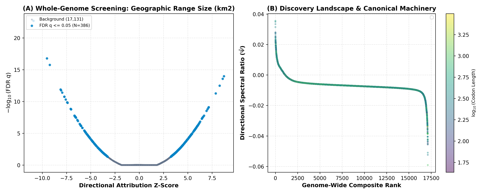

Geographic Range Size (km²)
Log10-transformed geographic distribution area across 520 mammalian species, capturing ecological generalization versus narrow endemism.
Sampled Species Universe & Phenotypic Distribution Extremes
Continuous macroevolutionary trait measurements curated across 526 mammalian species with high-coverage assemblies. Empirical observations across mammalian native ranges. The tables below catalog the top upper and lower extreme lineages anchoring the phenotypic continuum.
| # | Species & Common Name | Leaf ID | Geographic Range |
|---|---|---|---|
| 1 | Red fox Vulpes vulpes |
vulVul | 63,034,304 km² |
| 2 | Gray wolf Canis lupus |
canLup | 50,803,440 km² |
| 3 | Mexican gray wolf Canis lupus baileyi |
canLupBai | 50,803,440 km² |
| 4 | dingo Canis lupus dingo |
canLupDin | 50,803,440 km² |
| 5 | dog Canis lupus familiaris |
canFam | 50,803,440 km² |
| 6 | Least weasel Mustela nivalis |
musNiva | 43,656,881 km² |
| 7 | ermine Mustela erminea |
musErm | 39,718,065 km² |
| 8 | leopard Panthera pardus |
panPar | 29,348,601 km² |
| 9 | ratel Mellivora capensis |
melCap | 27,823,522 km² |
| 10 | caracal Caracal caracal |
carCaa | 26,609,097 km² |
| # | Species & Common Name | Leaf ID | Geographic Range |
|---|---|---|---|
| 1 | Bonin flying fox Pteropus pselaphon |
ptePse | 72 km² |
| 2 | Rodriguez flying fox Pteropus rodricensis |
pteRod | 112 km² |
| 3 | Gongshanensis muntjac Muntiacus gongshanensis |
munGon | 171 km² |
| 4 | Northern rufous mouse lemur Microcebus tavaratra |
micTav | 198 km² |
| 5 | Lac Alaotra bamboo lemur Hapalemur alaotrensis |
hapAlao | 215 km² |
| 6 | Mount Data shrew rat Rhynchomys soricoides |
rhySor | 264 km² |
| 7 | Iriomote cat Prionailurus iriomotensis |
priIri | 281 km² |
| 8 | Findleys myotis Myotis findleyi |
myoFin | 399 km² |
| 9 | Santa Catalina Island fox Urocyon littoralis catalinae |
uroLitCat | 512 km² |
| 10 | Amami-oshima island spiny rat Tokudaia osimensis |
tokOsi | 711 km² |
Browse Complete Universe of 526 Phenotyped Mammalian Species ↓
| Rank | Species | Common Name | Leaf ID | Geographic Range |
|---|---|---|---|---|
| 1 | Vulpes vulpes | Red fox | vulVul | 63,034,304 km² |
| 2 | Canis lupus | Gray wolf | canLup | 50,803,440 km² |
| 3 | Canis lupus baileyi | Mexican gray wolf | canLupBai | 50,803,440 km² |
| 4 | Canis lupus dingo | dingo | canLupDin | 50,803,440 km² |
| 5 | Canis lupus familiaris | dog | canFam | 50,803,440 km² |
| 6 | Mustela nivalis | Least weasel | musNiva | 43,656,881 km² |
| 7 | Mustela erminea | ermine | musErm | 39,718,065 km² |
| 8 | Panthera pardus | leopard | panPar | 29,348,601 km² |
| 9 | Mellivora capensis | ratel | melCap | 27,823,522 km² |
| 10 | Caracal caracal | caracal | carCaa | 26,609,097 km² |
| 11 | Sus scrofa | Pig | susScro | 25,951,693 km² |
| 12 | Lutra lutra | Eurasian river otter | lutLut | 25,877,469 km² |
| 13 | Gulo gulo luscus | American wolverine | gulGulLus | 24,495,952 km² |
| 14 | Hyaena hyaena | striped hyena | hyaHya | 24,254,343 km² |
| 15 | Procavia capensis | Cape rock hyrax | proCap | 24,125,352 km² |
| 16 | Ursus arctos | brown bear | ursArc | 23,972,321 km² |
| 17 | Puma concolor | puma | pumCon | 22,350,859 km² |
| 18 | Lepus capensis | Brown hare | lepCap | 21,956,899 km² |
| 19 | Lasiurus cinereus | hoary bat | aeoCin | 21,759,653 km² |
| 20 | Lepus timidus | Mountain hare | lepTim | 19,946,364 km² |
| 21 | Eidolon helvum | straw-colored fruit bat | eidHel | 18,942,406 km² |
| 22 | Rangifer tarandus granti | reindeer | ranTarGra | 18,376,464 km² |
| 23 | Arvicola amphibius | Eurasian water mole | arvAmp | 18,177,352 km² |
| 24 | Micromys minutus | European harvest mouse | micMin | 18,108,429 km² |
| 25 | Orycteropus afer afer | aardvark | oryAfeAfe | 18,035,652 km² |
| 26 | Sciurus vulgaris | Eurasian red squirrel | sciVul | 17,785,006 km² |
| 27 | Canis latrans | Coyote | canLat | 17,099,094 km² |
| 28 | Dasypus novemcinctus | nine-banded armadillo | dasNov | 17,080,219 km² |
| 29 | Vulpes lagopus | Arctic fox | vulLag | 16,988,732 km² |
| 30 | Mustela eversmannii | Steppe polecat | musEve | 16,554,152 km² |
| 31 | Molossus molossus | Pallass mastiff bat | molMol | 16,538,108 km² |
| 32 | Hystrix cristata | crested porcupine | hysCri | 16,282,510 km² |
| 33 | Mops condylurus | Angolan free-tailed bat | mopCon | 16,249,258 km² |
| 34 | Mungos mungo | banded mongoose | munMug | 15,894,555 km² |
| 35 | Jaculus jaculus | lesser Egyptian jerboa | jacJac | 15,392,985 km² |
| 36 | Castor canadensis | American beaver | casCana | 15,377,760 km² |
| 37 | Herpailurus yagouaroundi | jaguarundi | pumYag | 15,093,389 km² |
| 38 | Noctilio leporinus | greater bulldog bat | nocLep | 14,991,801 km² |
| 39 | Crocuta crocuta | spotted hyena | croCro | 14,790,150 km² |
| 40 | Ondatra zibethicus | muskrat | ondZib | 14,671,151 km² |
| 41 | Odocoileus virginianus | white-tailed deer | odoVir | 14,446,002 km² |
| 42 | Rhinopoma microphyllum | Greater mouse-tailed bat | rhiMic | 14,416,989 km² |
| 43 | Artibeus jamaicensis | Jamaican fruit-eating bat | artJam | 14,327,575 km² |
| 44 | Sorex araneus | European shrew | sorAra | 14,302,732 km² |
| 45 | Artibeus lituratus | Great fruit-eating bat | artLit | 14,275,190 km² |
| 46 | Cervus elaphus | red deer | cerEla | 14,167,735 km² |
| 47 | Sylvicapra grimmia | bush duiker | sylGri | 14,120,906 km² |
| 48 | Carollia perspicillata | Sebas short-tailed bat | carPer | 14,098,731 km² |
| 49 | Tadarida brasiliensis | Brazilian free-tailed bat | tadBra | 13,978,029 km² |
| 50 | Pteromys volans | Siberian flying squirrel | pteVola | 13,883,154 km² |
| 51 | Tamias sibiricus | Siberian chipmunk | tamSib | 13,733,700 km² |
| 52 | Tapirus terrestris | Brazilian tapir | tapTer | 13,663,839 km² |
| 53 | Eira barbara | Tayra | eirBar | 13,411,788 km² |
| 54 | Eptesicus fuscus | big brown bat | eptFus | 13,321,727 km² |
| 55 | Tragelaphus scriptus | bushbuck | traScr | 13,167,566 km² |
| 56 | Peromyscus maniculatus sonoriensis | North American deer mouse | perManSon | 13,001,065 km² |
| 57 | Peromyscus maniculatus bairdii | prairie deer mouse | perManBai | 13,001,065 km² |
| 58 | Thryonomys swinderianus | Greater cane rat | thrSwi | 13,000,747 km² |
| 59 | Potos flavus | kinkajou | potFla | 12,770,953 km² |
| 60 | Hydrochoerus hydrochaeris | capybara | hydHyd | 12,726,191 km² |
| 61 | Phyllostomus hastatus | Greater spear-nosed bat | phyHast | 12,690,238 km² |
| 62 | Trachops cirrhosus | fringe-lipped bat | traCir | 12,679,671 km² |
| 63 | Tamandua tetradactyla | southern tamandua | tamTet | 12,531,430 km² |
| 64 | Plecotus auritus | brown big-eared bat | pleAur | 12,452,923 km² |
| 65 | Myrmecophaga tridactyla | giant anteater | myrTri | 12,447,514 km² |
| 66 | Phyllostomus discolor | Pale spear-nosed bat | phyDisc | 12,188,898 km² |
| 67 | Saccopteryx bilineata | greater sac-winged bat | sacBil | 12,018,838 km² |
| 68 | Microtus pennsylvanicus | Meadow vole | micPen | 11,959,647 km² |
| 69 | Lontra canadensis | Northern American river otter | lonCan | 11,887,021 km² |
| 70 | Leopardus tigrinus | little spotted cat | leoTig | 11,884,529 km² |
| 71 | Syncerus caffer | African buffalo | synCaf | 11,706,835 km² |
| 72 | Procyon lotor | raccoon | proLot | 11,703,645 km² |
| 73 | Vespertilio murinus | particolored bat | vesMur | 11,582,955 km² |
| 74 | Diceros bicornis minor | black rhinoceros | dicBicMin | 11,451,482 km² |
| 75 | Rhynchonycteris naso | Proboscis bat | rhyNas | 11,358,190 km² |
| 76 | Panthera leo | lion | panLeo | 11,237,685 km² |
| 77 | Phacochoerus africanus | Common warthog | phaAfr | 11,093,471 km² |
| 78 | Apodemus agrarius | Eurasian field mouse | apoAgr | 11,086,860 km² |
| 79 | Erethizon dorsatum | North American porcupine | ereDor | 11,016,216 km² |
| 80 | Ovis ammon | argali | oviAmm | 10,939,817 km² |
| 81 | Saccopteryx leptura | lesser sac-winged bat | sacLep | 10,599,499 km² |
| 82 | Acinonyx jubatus | cheetah | aciJub | 10,586,307 km² |
| 83 | Sorex cinereus | cinereus shrew | sorCin | 10,567,246 km² |
| 84 | Lycaon pictus | African hunting dog | lycPict | 10,539,676 km² |
| 85 | Panthera onca | Jaguar | panOnca | 10,500,825 km² |
| 86 | Lepus europaeus | European hare | lepEur | 10,436,748 km² |
| 87 | Myotis brandtii | Brandts myotis bat | myoBra | 10,341,787 km² |
| 88 | Prionailurus bengalensis | leopard cat | priBen | 10,201,748 km² |
| 89 | Kobus ellipsiprymnus | waterbuck | kobEll | 10,067,124 km² |
| 90 | Coendou prehensilis | Brazilian porcupine | coePre | 10,034,057 km² |
| 91 | Capreolus pygargus | Eastern roe deer | capPyg | 9,816,966 km² |
| 92 | Arvicanthis niloticus | African grass rat | arvNil | 9,758,465 km² |
| 93 | Microtus agrestis | short-tailed field vole | micAgr | 9,734,298 km² |
| 94 | Speothos venaticus | Bush dog | speVen | 9,703,966 km² |
| 95 | Lynx rufus | bobcat | lynRuf | 9,702,533 km² |
| 96 | Ursus americanus | American black bear | ursAme | 9,650,153 km² |
| 97 | Lepus americanus | snowshoe hare | lepAme | 9,501,181 km² |
| 98 | Pipistrellus pipistrellus | common pipistrelle | pipPip | 9,195,389 km² |
| 99 | Pipistrellus pygmaeus | soprano pipistrelle | pipPyg | 9,195,389 km² |
| 100 | Urocyon cinereoargenteus | Gray fox | uroCin | 9,010,481 km² |
| 101 | Felis chaus | jungle cat | felCha | 8,986,836 km² |
| 102 | Galago senegalensis | Senegal galago | galSen | 8,867,497 km² |
| 103 | Taxidea taxus jeffersonii | American badger | taxTax | 8,860,573 km² |
| 104 | Anoura caudifer | tailed tailless bat | anoCau | 8,755,498 km² |
| 105 | Moschus moschiferus | Siberian musk deer | mosMos | 8,554,235 km² |
| 106 | Zapus hudsonius | meadow jumping mouse | zapHud | 8,541,120 km² |
| 107 | Pteronotus parnellii | Parnells mustached bat | ptePar | 8,414,217 km² |
| 108 | Pteronotus parnellii mexicanus | Parnells mustached bat | pteParMex | 8,414,217 km² |
| 109 | Martes martes | European pine marten | marMart | 8,361,437 km² |
| 110 | Myodes glareolus | Bank vole | myoGla | 8,269,299 km² |
| 111 | Lynx canadensis | Canada lynx | lynCana | 8,252,985 km² |
| 112 | Pteronura brasiliensis | giant otter | pteBra | 8,075,624 km² |
| 113 | Hippotragus equinus | roan antelope | hipEqu | 8,018,853 km² |
| 114 | Graphiurus murinus | woodland dormouse | graMur | 7,836,495 km² |
| 115 | Microtus arvalis | Common vole | micArv | 7,769,080 km² |
| 116 | Marmota monax | woodchuck | marMon | 7,599,938 km² |
| 117 | Mustela putorius furo | domestic ferret | musFur | 7,565,541 km² |
| 118 | Muntiacus muntjak | muntjak | munMun | 7,321,434 km² |
| 119 | Sylvilagus floridanus | eastern cottontail | sylFlo | 7,216,258 km² |
| 120 | Talpa europaea | European mole | talEur | 7,114,720 km² |
| 121 | Paradoxurus hermaphroditus | Asian palm civet | parHer | 7,074,838 km² |
| 122 | Martes foina | beach marten | marFoi | 7,011,029 km² |
| 123 | Sorex hoyi | Pygmy shrew | sorHoyi | 6,973,125 km² |
| 124 | Heterohyrax brucei | yellow-spotted hyrax | hetBru | 6,954,996 km² |
| 125 | Erythrocebus patas | red guenon | eryPat | 6,948,334 km² |
| 126 | Helogale parvula | dwarf mongoose | helPar | 6,944,754 km² |
| 127 | Rhinolophus ferrumequinum | greater horseshoe bat | rhiFer | 6,797,743 km² |
| 128 | Capreolus capreolus | Western roe deer | capCap | 6,777,178 km² |
| 129 | Cricetus cricetus | Black-bellied hamster | criCri | 6,712,428 km² |
| 130 | Nyctereutes procyonoides | raccoon dog | nycPro | 6,704,452 km² |
| 131 | Macaca mulatta | Rhesus monkey | rheMac | 6,566,547 km² |
| 132 | Martes zibellina | sable | marZib | 6,492,749 km² |
| 133 | Tragelaphus strepsiceros | greater kudu | traStr | 6,476,880 km² |
| 134 | Redunca redunca | Bohar reedbuck | redRed | 6,462,305 km² |
| 135 | Proteles cristata cristata | aardwolf | proCriCri | 6,435,463 km² |
| 136 | Vulpes corsac | Corsac fox | vulCor | 6,378,396 km² |
| 137 | Odocoileus hemionus hemionus | mule deer | odoHem | 6,310,738 km² |
| 138 | Odocoileus hemionus | mule deer | odoHem_2 | 6,310,738 km² |
| 139 | Megaderma spasma | lesser false vampire bat | megSpa | 6,183,811 km² |
| 140 | Cavia aperea | Brazilian guinea pig | cavApe | 6,171,300 km² |
| 141 | Rousettus aegyptiacus | Egyptian rousette | rouAeg | 6,076,090 km² |
| 142 | Phataginus tricuspis | Tree pangolin | manTri | 5,968,403 km² |
| 143 | Peromyscus leucopus | white-footed mouse | perLeu | 5,841,433 km² |
| 144 | Hystrix brachyura | Malayan porcupine | hysBra | 5,702,383 km² |
| 145 | Cynopterus sphinx | Indian short-nosed fruit bat | cynSph | 5,648,558 km² |
| 146 | Papio anubis | olive baboon | papAnu | 5,597,001 km² |
| 147 | Rhinolophus affinis | Intermediate horseshoe bat | rhiAff | 5,563,218 km² |
| 148 | Suncus etruscus | white-toothed pygmy shrew | sunEtr | 5,424,320 km² |
| 149 | Paguma larvata | Masked palm civet | pagLar | 5,422,716 km² |
| 150 | Oreotragus oreotragus | klipspringer | oreOre | 5,375,303 km² |
| 151 | Ursus thibetanus thibetanus | Asiatic black bear | ursThi | 5,348,705 km² |
| 152 | Martes flavigula | yellow-throated marten | marFlv | 5,260,690 km² |
| 153 | Galago moholi | Moholi bushbaby | galMoh | 5,183,682 km² |
| 154 | Pipistrellus nathusii | Nathusiuss pipistrelle | pipNat | 5,149,392 km² |
| 155 | Reithrodontomys megalotis longicaudus | Western harvest mouse | reiMegLon | 5,125,874 km² |
| 156 | Dipus sagitta | northern three-toed jerboa | dipSag | 5,074,051 km² |
| 157 | Apodemus sylvaticus | European woodmouse | apoSyl | 5,043,251 km² |
| 158 | Chrysocyon brachyurus | maned wolf | chrBra | 5,038,801 km² |
| 159 | Otocyon megalotis | bat-eared fox | otoMeg | 5,001,823 km² |
| 160 | Myotis septentrionalis | Northern long-eared myotis | myoSep | 4,944,706 km² |
| 161 | Raphicerus campestris | steenbok | rapCam | 4,930,076 km² |
| 162 | Micronycteris hirsuta | hairy big-eared bat | micHir | 4,915,006 km² |
| 163 | Myotis nattereri | Natterers bat | myoNat | 4,811,054 km² |
| 164 | Pipistrellus kuhlii | Kuhls pipistrelle | pipKuh | 4,765,558 km² |
| 165 | Oryx gazella | gemsbok | oryGaz | 4,613,582 km² |
| 166 | Corynorhinus townsendii | Townsends big-eared bat | corTow | 4,604,872 km² |
| 167 | Hipposideros armiger | great roundleaf bat | hipArm | 4,465,867 km² |
| 168 | Sciurus niger | fox squirrel | sciNig | 4,359,548 km² |
| 169 | Loxodonta africana | African savanna elephant | loxAfr | 4,233,288 km² |
| 170 | Antrozous pallidus | pallid bat | antPal | 4,228,782 km² |
| 171 | Rhinolophus hipposideros | Lesser horseshoe bat | rhiHip | 4,202,574 km² |
| 172 | Myocastor coypus | coypu | myoCoy | 4,147,600 km² |
| 173 | Otolemur crassicaudatus | thick-tailed bush baby | otoCra | 4,121,059 km² |
| 174 | Blarina brevicauda | Short-tailed shrew | blaBrev | 4,102,749 km² |
| 175 | Sciurus carolinensis | gray squirrel | sciCar | 4,081,069 km² |
| 176 | Rhombomys opimus | great gerbil | rhoOpi | 4,000,735 km² |
| 177 | Colobus guereza | mantled guereza | colGue | 3,994,317 km² |
| 178 | Pedetes capensis | springhare | pedCap | 3,979,810 km² |
| 179 | Aepyceros melampus | impala | aepMel | 3,926,869 km² |
| 180 | Bassariscus astutus | ringtail | basAst | 3,916,072 km² |
| 181 | Choloepus didactylus | southern two-toed sloth | choDid | 3,900,959 km² |
| 182 | Hydromys chrysogaster | Golden-bellied water rat | hydChr | 3,891,043 km² |
| 183 | Eliomys quercinus | garden dormouse | eliQue | 3,870,497 km² |
| 184 | Glaucomys volans | southern flying squirrel | glaVol | 3,850,611 km² |
| 185 | Spilogale gracilis | western spotted skunk | spiGra | 3,831,635 km² |
| 186 | Onychomys leucogaster | Northern grasshopper mouse | onyLeu | 3,797,200 km² |
| 187 | Hipposideros larvatus | Intermediate roundleaf bat | hipLar | 3,785,610 km² |
| 188 | Myotis emarginatus | Geoffroys bat | myoEma | 3,765,087 km² |
| 189 | Myotis yumanensis | Yuma myotis | myoYum | 3,753,877 km² |
| 190 | Myotis myotis | greater mouse-eared bat | myoMyo | 3,731,150 km² |
| 191 | Tragulus kanchil | Lesser mouse deer | traKan | 3,708,821 km² |
| 192 | Ellobius talpinus | Northern mole vole | ellTal | 3,707,269 km² |
| 193 | Condylura cristata | star-nosed mole | conCri | 3,692,909 km² |
| 194 | Mustela lutreola | European mink | musLut | 3,568,955 km² |
| 195 | Prionailurus viverrinus | fishing cat | priViv | 3,546,617 km² |
| 196 | Glis glis | Fat dormouse | gliGli | 3,545,669 km² |
| 197 | Pekania pennanti | Fisher | pekPenn | 3,481,124 km² |
| 198 | Scalopus aquaticus | eastern mole | scaAqu | 3,462,331 km² |
| 199 | Lepus townsendii | White-tailed jackrabbit | lepTow | 3,453,779 km² |
| 200 | Dipodomys ordii | Ords kangaroo rat | dipOrd | 3,426,003 km² |
| 201 | Muscardinus avellanarius | Hazel dormouse | musAvel | 3,331,819 km² |
| 202 | Acomys dimidiatus | Eastern spiny mouse | acoDim | 3,325,550 km² |
| 203 | Smutsia gigantea | Giant pangolin | smuGig | 3,277,539 km² |
| 204 | Microtus ochrogaster | prairie vole | micOch | 3,234,309 km² |
| 205 | Erinaceus europaeus | western European hedgehog | eriEur | 3,201,699 km² |
| 206 | Connochaetes taurinus | brindled gnu | conTau | 3,201,113 km² |
| 207 | Ceratotherium simum cottoni | northern white rhinoceros | cerSimCot | 3,184,467 km² |
| 208 | Saimiri sciureus | Common squirrel monkey | saiSci | 3,166,418 km² |
| 209 | Hippotragus niger niger | sable antelope | hipNigNig | 3,149,647 km² |
| 210 | Cebus albifrons | white-fronted capuchin | cebAlb | 3,105,886 km² |
| 211 | Pseudois nayaur | Bharal | pseNaya | 3,101,840 km² |
| 212 | Dama dama | fallow deer | damDam | 3,081,759 km² |
| 213 | Colobus angolensis palliatus | Angolan colobus | colAng | 3,019,802 km² |
| 214 | Cercopithecus neglectus | De Brazzas monkey | cerNeg | 2,963,266 km² |
| 215 | Pipistrellus abramus | Japanese house bat | pipAbr | 2,948,954 km² |
| 216 | Saiga tatarica | saiga antelope | saiTat | 2,926,916 km² |
| 217 | Phodopus roborovskii | desert hamster | phoRob | 2,913,960 km² |
| 218 | Neofelis nebulosa | Clouded leopard | neoNeb | 2,913,591 km² |
| 219 | Neofelis diardi | Sunda clouded leopard | neoDia | 2,913,591 km² |
| 220 | Manis pentadactyla | Chinese pangolin | manPen | 2,909,570 km² |
| 221 | Nycticeius humeralis | evening bat | nycHum | 2,889,478 km² |
| 222 | Capra sibirica | Siberian ibex | capSib | 2,802,214 km² |
| 223 | Giraffa camelopardalis rothschildi | giraffe | girCamRot | 2,791,593 km² |
| 224 | Giraffa camelopardalis antiquorum | Kordofan giraffe | girCamAnt | 2,791,593 km² |
| 225 | Giraffa camelopardalis | giraffe | girCam | 2,791,593 km² |
| 226 | Panthera uncia | snow leopard | panUnc | 2,744,453 km² |
| 227 | Lepus oiostolus | Woolly hare | lepOio | 2,735,996 km² |
| 228 | Cervus nippon | Sika deer | cerNip | 2,714,653 km² |
| 229 | Manis javanica | Malayan pangolin | manJav | 2,642,894 km² |
| 230 | Lasiurus borealis | red bat | lasBor | 2,598,559 km² |
| 231 | Tragelaphus eurycerus isaaci | mountain bongo | traEurIsa | 2,564,433 km² |
| 232 | Helarctos malayanus | Malayan sun bear | helMal | 2,525,372 km² |
| 233 | Dasyprocta punctata | punctate agouti | dasPun | 2,516,292 km² |
| 234 | Panthera tigris | tiger | panTig | 2,494,993 km² |
| 235 | Ovis canadensis | Bighorn sheep | oviCana | 2,457,850 km² |
| 236 | Rhinolophus sinicus | Chinese rufous horseshoe bat | rhiSin | 2,366,278 km² |
| 237 | Cercopithecus mitis | blue monkey | cerMit | 2,341,818 km² |
| 238 | Vulpes ferrilata | Tibetan sand fox | vulFer | 2,339,623 km² |
| 239 | Nasua narica | White-nosed coati | nasNar | 2,329,130 km² |
| 240 | Ochotona curzoniae | black-lipped pika | ochCur | 2,326,435 km² |
| 241 | Bos frontalis | gayal | bosFro | 2,294,332 km² |
| 242 | Oryctolagus cuniculus cuniculus | rabbit | oryCunCun | 2,293,893 km² |
| 243 | Oryctolagus cuniculus | Rabbit | oryCuni | 2,293,893 km² |
| 244 | Lophiomys imhausi | crested rat | lopImh | 2,277,319 km² |
| 245 | Moschus berezovskii | Chinese forest musk deer | mosBer | 2,263,302 km² |
| 246 | Cynopterus brachyotis | lesser short-nosed fruit bat | cynBra | 2,220,429 km² |
| 247 | Macaca fascicularis | Crab-eating macaque | macFas | 2,197,587 km² |
| 248 | Pteropus vampyrus | large flying fox | pteVam | 2,034,681 km² |
| 249 | Axis porcinus | Hog deer | axiPor | 2,017,514 km² |
| 250 | Antilocapra americana | pronghorn | antAme | 2,009,746 km² |
| 251 | Pachyuromys duprasi | fat-tailed gerbil | pacDup | 1,991,862 km² |
| 252 | Macroglossus sobrinus | Long-tongued fruit bat | macSob | 1,987,018 km² |
| 253 | Thomomys bottae | Bottas pocket gopher | thoBot | 1,976,663 km² |
| 254 | Dinomys branickii | pacarana | dinBra | 1,963,974 km² |
| 255 | Dicrostonyx torquatus | Arctic lemming | dicTor | 1,960,681 km² |
| 256 | Meriones unguiculatus | Mongolian gerbil | merUng | 1,946,733 km² |
| 257 | Nycticebus bengalensis | Bengal slow loris | nycBen | 1,941,260 km² |
| 258 | Tragelaphus imberbis | lesser kudu | traImb | 1,907,499 km² |
| 259 | Lagostomus maximus | plains viscacha | lagMax | 1,907,434 km² |
| 260 | Pan troglodytes | chimpanzee | panTro | 1,898,948 km² |
| 261 | Xerus rutilus | unstriped ground squirrel | xerRut | 1,869,962 km² |
| 262 | Hippopotamus amphibius | hippopotamus | hipAmp | 1,849,389 km² |
| 263 | Hippopotamus amphibius kiboko | Hippopotamus | hipAmphKib | 1,849,389 km² |
| 264 | Tolypeutes matacus | southern three-banded armadillo | tolMata | 1,839,317 km² |
| 265 | Rhinolophus trifoliatus | Trefoil horseshoe bat | rhiTri | 1,830,417 km² |
| 266 | Hipposideros galeritus | Cantors roundleaf bat | hipGal | 1,820,494 km² |
| 267 | Muntiacus reevesi | Reeves muntjac | munRee | 1,767,641 km² |
| 268 | Psammomys obesus | fat sand rat | psaObe | 1,735,288 km² |
| 269 | Madoqua kirkii | Kirks dik-dik | madKir | 1,734,714 km² |
| 270 | Felis nigripes | black-footed cat | felNig | 1,732,324 km² |
| 271 | Suricata suricatta | meerkat | surSur | 1,720,748 km² |
| 272 | Marmota flaviventris | Yellow-bellied marmot | marFlav | 1,718,950 km² |
| 273 | Bos javanicus | banteng | bosJav | 1,687,921 km² |
| 274 | Saimiri boliviensis boliviensis | Bolivian squirrel monkey | saiBolBol | 1,686,508 km² |
| 275 | Saimiri boliviensis | Bolivian squirrel monkey | saiBoli | 1,686,508 km² |
| 276 | Mus minutoides | Southern African pygmy mouse | musMin | 1,646,723 km² |
| 277 | Ovis nivicola lydekkeri | snow sheep | oviNivLyd | 1,645,754 km² |
| 278 | Ovibos moschatus | muskox | oviMos | 1,615,606 km² |
| 279 | Neotragus moschatus | suni | neoMos | 1,612,116 km² |
| 280 | Litocranius walleri | gerenuk | litWal | 1,594,553 km² |
| 281 | Nanger dama ruficollis | Dama gazelle | nanDamRuf | 1,593,779 km² |
| 282 | Nanger dama | Dama gazelle | nanDam | 1,593,779 km² |
| 283 | Sorex fumeus | smoky shrew | sorFum | 1,556,942 km² |
| 284 | Geomys bursarius | Plains pocket gopher | geoBur | 1,538,127 km² |
| 285 | Alouatta caraya | Black howler monkey | aloCara | 1,534,736 km² |
| 286 | Saguinus midas | Midas tamarin | sagMid | 1,524,401 km² |
| 287 | Bos grunniens | domestic yak | bosGru | 1,523,540 km² |
| 288 | Semnopithecus entellus | Hanuman langur | semEnt | 1,516,358 km² |
| 289 | Nycticebus coucang | slow loris | nycCou | 1,504,921 km² |
| 290 | Xerus inauris | South African ground squirrel | xerIna | 1,481,485 km² |
| 291 | Moschus chrysogaster | alpine musk deer | mosChr | 1,480,747 km² |
| 292 | Ammotragus lervia | aoudad | ammLer | 1,447,451 km² |
| 293 | Elephas maximus indicus | Asiatic elephant | eleMaxInd | 1,429,083 km² |
| 294 | Dipodomys merriami | Merriams kangaroo rat | dipMer | 1,420,056 km² |
| 295 | Scaptochirus moschatus | Short-faced mole | scaMos | 1,409,959 km² |
| 296 | Aselliscus stoliczkanus | Stoliczkas trident bat | aseSto | 1,399,538 km² |
| 297 | Chlorocebus sabaeus | green monkey | chlSab | 1,390,956 km² |
| 298 | Macaca assamensis | Assam macaque | macAss | 1,383,530 km² |
| 299 | Ia io | Great evening bat | iaxIox | 1,379,038 km² |
| 300 | Ochotona princeps | American pika | ochPri | 1,346,176 km² |
| 301 | Myospalax psilurus | Transbaikal zokor | myoPsil | 1,345,130 km² |
| 302 | Mus caroli | Ryukyu mouse | musCar | 1,344,917 km² |
| 303 | Cavia tschudii | Montane guinea pig | cavTsc | 1,337,430 km² |
| 304 | Corynorhinus rafinesquii | Rafinesques big-eared bat | corRaf | 1,333,257 km² |
| 305 | Marmota himalayana | Himalayan marmot | marHim | 1,331,687 km² |
| 306 | Callithrix penicillata | Black-pencilled marmoset | calPen | 1,325,473 km² |
| 307 | Heterocephalus glaber | naked mole-rat | hetGla | 1,324,440 km² |
| 308 | Pseudomys desertor | brown desert mouse | pseDes | 1,317,773 km² |
| 309 | Trachypithecus phayrei crepuscula | Phayres leaf monkey | traPhaCre | 1,313,009 km² |
| 310 | Lepus tolai | Tolai hare | lepTola | 1,307,980 km² |
| 311 | Mus pahari | shrew mouse | musPah | 1,291,821 km² |
| 312 | Damaliscus lunatus | topi | damLun | 1,266,510 km² |
| 313 | Macaca arctoides | stump-tailed macaque | macArc | 1,236,024 km² |
| 314 | Salpingotus crassicauda | Thick-tailed pygmy jerboa | salCra | 1,234,523 km² |
| 315 | Macaca thibetana thibetana | Pere Davids macaque | macThiThi | 1,232,955 km² |
| 316 | Desmana moschata | Insectivores | desMos | 1,225,329 km² |
| 317 | Leptonycteris yerbabuenae | Lesser long-nosed bat | lepYer | 1,217,816 km² |
| 318 | Philantomba maxwellii | Maxwells duiker | phiMax | 1,214,156 km² |
| 319 | Pteropus alecto | black flying fox | pteAle | 1,205,090 km² |
| 320 | Addax nasomaculatus | Addax | addNas | 1,168,709 km² |
| 321 | Tupaia tana | large tree shrew | tupTan | 1,167,156 km² |
| 322 | Rhizomys pruinosus | hoary bamboo rat | rhiPru | 1,160,203 km² |
| 323 | Hydropotes inermis | Chinese water deer | hydIne | 1,140,413 km² |
| 324 | Oreamnos americanus | mountain goat | oreAme | 1,137,828 km² |
| 325 | Pantholops hodgsonii | chiru | panHod | 1,113,531 km² |
| 326 | Okapia johnstoni | okapi | okaJoh | 1,105,797 km² |
| 327 | Spermophilus dauricus | Daurian ground squirrel | speDau | 1,089,392 km² |
| 328 | Ailurus fulgens | lesser panda | ailFul | 1,075,407 km² |
| 329 | Antidorcas marsupialis | springbok | antMar | 1,066,805 km² |
| 330 | Cercopithecus albogularis | Sykes monkey | cerAlb | 1,057,710 km² |
| 331 | Pithecia pithecia | white-faced saki | pitPit | 1,037,798 km² |
| 332 | Macaca nemestrina | Pig-tailed macaque | macNeme | 1,033,483 km² |
| 333 | Ateles belzebuth | White-bellied spider monkey | ateBel | 1,030,364 km² |
| 334 | Choloepus hoffmanni | Hoffmanns two-fingered sloth | choHof | 997,079 km² |
| 335 | Chlorocebus aethiops | grivet | chlAet | 994,898 km² |
| 336 | Ateles chamek | Black spider monkey | ateCha | 990,902 km² |
| 337 | Neotoma lepida | desert woodrat | neoLep | 984,444 km² |
| 338 | Mus spretus | Western wild mouse | musSpr | 979,425 km² |
| 339 | Bubalus kerabau | carabao | bubKer | 978,657 km² |
| 340 | Bubalus bubalis | water buffalo | bubBub | 978,657 km² |
| 341 | Nanger granti | Grants gazelle | nanGra | 963,156 km² |
| 342 | Eospalax fontanierii | Chinese zokor | eosFon | 952,911 km² |
| 343 | Peromyscus crinitus | canyon mouse | perCri | 929,829 km² |
| 344 | Mesocricetus auratus | golden hamster | mesAur | 904,867 km² |
| 345 | Ateles paniscus | Red-faced black spider monkey | atePan | 892,635 km² |
| 346 | Microtus richardsoni arvicoloides | water vole | micRicArv | 860,149 km² |
| 347 | Ateles marginatus | White-cheeked spider monkey | ateMar | 831,855 km² |
| 348 | Dolichotis patagonum | Patagonian cavy | dolPat | 824,849 km² |
| 349 | Vicugna vicugna mensalis | vicugna | vicVicMen | 817,999 km² |
| 350 | Ateles geoffroyi | black-handed spider monkey | ateGeo | 806,609 km² |
| 351 | Acomys russatus | golden spiny mouse | acoRus | 800,321 km² |
| 352 | Lagothrix lagotricha | Brown woolly monkey | lagLag | 797,455 km² |
| 353 | Tapirus indicus | Asiatic tapir | tapIndi | 794,778 km² |
| 354 | Onychomys arenicola | Chihuahuan grasshopper mouse | onyAre | 781,840 km² |
| 355 | Otolemur garnettii | small-eared galago | otoGar | 781,284 km² |
| 356 | Chionomys nivalis | European snow vole | chiNiv | 777,916 km² |
| 357 | Onychomys torridus | southern grasshopper mouse | onyTor | 769,659 km² |
| 358 | Rupicapra rupicapra | Chamois | rupRup | 742,757 km² |
| 359 | Acomys percivali | Percivals spiny mouse | acoPer | 686,807 km² |
| 360 | Cercopithecus mona | Mona monkey | cerMon | 652,362 km² |
| 361 | Phodopus sungorus | winter white dwarf hamster | phoSun | 647,779 km² |
| 362 | Typhlomys cinereus | Soft-furred tree mouse | typCin | 643,813 km² |
| 363 | Papio hamadryas | hamadryas baboon | papHam | 639,689 km² |
| 364 | Mastomys coucha | southern multimammate mouse | masCou | 636,383 km² |
| 365 | Macrotus californicus | California big-eared bat | macCal | 632,246 km² |
| 366 | Bassariscus sumichrasti | Cacomistle | basSum | 625,978 km² |
| 367 | Mus spicilegus | steppe mouse | musSpi | 625,827 km² |
| 368 | Gorilla gorilla gorilla | western lowland gorilla | gorGor | 625,703 km² |
| 369 | Gorilla gorilla | western gorilla | gorGor_2 | 625,703 km² |
| 370 | Lepus yarkandensis | Yarkand hare | lepYar | 613,125 km² |
| 371 | Peromyscus nasutus | northern rock mouse | perNas | 610,450 km² |
| 372 | Allenopithecus nigroviridis | Allens swamp monkey | allNig | 609,031 km² |
| 373 | Callithrix jacchus | White-tufted-ear marmoset | calJacc | 604,264 km² |
| 374 | Eidolon dupreanum | Malagasy straw-colored fruit bat | eidDup | 594,211 km² |
| 375 | Dicerorhinus sumatrensis harrissoni | Sumatran rhinoceros | dicSumHar | 594,011 km² |
| 376 | Dicerorhinus sumatrensis sumatrensis | Sumatran rhinoceros | dicSum | 594,011 km² |
| 377 | Nasalis larvatus | proboscis monkey | nasLar | 574,820 km² |
| 378 | Uromys caudimaculatus | giant uromys | uroCau | 563,894 km² |
| 379 | Alouatta palliata | mantled howler monkey | aloPal | 559,555 km² |
| 380 | Nyctalus aviator | birdlike noctule | nycAvi | 550,222 km² |
| 381 | Trachypithecus germaini | Indochinese lutung | traGer | 544,017 km² |
| 382 | Equus kiang | Kiang | equKian | 538,675 km² |
| 383 | Lophocebus aterrimus | Black crested mangabey | lopAte | 535,515 km² |
| 384 | Dipodomys spectabilis | banner-tailed kangaroo rat | dipSpe | 525,471 km² |
| 385 | Perognathus longimembris pacificus | Pacific pocket mouse | perLonPac | 518,800 km² |
| 386 | Eudorcas thomsonii | Thomsons gazelle | eudTho | 515,821 km² |
| 387 | Uropsilus gracilis | gracile shrew mole | uroGra | 502,189 km² |
| 388 | Spermophilus citellus | European suslik | speCit | 486,400 km² |
| 389 | Cacajao melanocephalus | Black-headed Uacari | cacMel | 465,905 km² |
| 390 | Callimico goeldii | Goeldis marmoset | calGoe | 462,922 km² |
| 391 | Mustela strigidorsa | Black-striped weasel | musStr | 453,670 km² |
| 392 | Cercocebus atys | sooty mangabey | cerAty | 440,621 km² |
| 393 | Petromus typicus | dassie-rat | petTyp | 427,688 km² |
| 394 | Neotragus pygmaeus | royal antelope | neoPyg | 426,515 km² |
| 395 | Sylvilagus bachmani | brush rabbit | sylBac | 417,293 km² |
| 396 | Pan paniscus | pygmy chimpanzee | panPan | 412,936 km² |
| 397 | Tremarctos ornatus | spectacled bear | treOrn | 409,518 km² |
| 398 | Budorcas taxicolor | takin | budTax | 402,044 km² |
| 399 | Peromyscus polionotus subgriseus | oldfield mouse | perPol | 377,395 km² |
| 400 | Apodemus speciosus | Large Japanese field mouse | apoSpe | 361,275 km² |
| 401 | Pteropus rufus | Malagasy flying fox | pteRuf | 359,699 km² |
| 402 | Acomys kempi | Kemps spiny mouse | acoKem | 358,018 km² |
| 403 | Myospalax aspalax | False zokor | myoAspa | 333,938 km² |
| 404 | Catagonus wagneri | Chacoan peccary | catWag | 329,881 km² |
| 405 | Ctenodactylus gundi | Northern gundi | cteGund | 324,162 km² |
| 406 | Rhinolophus rex | king horseshoe bat | rhiRex | 323,465 km² |
| 407 | Trachypithecus francoisi | Francoiss langur | traFra | 313,032 km² |
| 408 | Rhinopithecus roxellana | golden snub-nosed monkey | rhiRox | 311,106 km² |
| 409 | Cynomys gunnisoni | Gunnisons prairie dog | cynGun | 309,979 km² |
| 410 | Microtus californicus | California vole | micCal | 307,996 km² |
| 411 | Mandrillus sphinx | mandrill | manSph | 287,897 km² |
| 412 | Talpa occidentalis | Iberian mole | talOcc | 279,205 km² |
| 413 | Miopithecus talapoin | talapoin | mioTal | 258,766 km² |
| 414 | Tenrec ecaudatus | Tailless tenrec | tenEcau | 248,061 km² |
| 415 | Aplodontia rufa | mountain beaver | aplRuf | 245,596 km² |
| 416 | Pongo pygmaeus | Bornean orangutan | ponPyg | 245,264 km² |
| 417 | Rousettus madagascariensis | Madagascan rousette | rouMad | 243,395 km² |
| 418 | Capricornis sumatraensis | Sumatran serow | capSum | 237,175 km² |
| 419 | Kobus leche leche | lechwe | kobLecLec | 229,752 km² |
| 420 | Cryptoprocta ferox | fossa | cryFer | 214,312 km² |
| 421 | Oryx dammah | scimitar-horned oryx | oryDam | 214,297 km² |
| 422 | Microtus oregoni | creeping vole | micOre | 206,883 km² |
| 423 | Papio papio | Guinea baboon | papPap | 205,349 km² |
| 424 | Mormoops blainvillei | Antillean ghost-faced bat | morBla | 202,318 km² |
| 425 | Ateles fusciceps | Brown-headed spider monkey | ateFus | 201,580 km² |
| 426 | Sorex ornatus | Ornate shrew | sorOrn | 194,624 km² |
| 427 | Nomascus leucogenys | northern white-cheeked gibbon | nomLeu | 194,573 km² |
| 428 | Saguinus imperator | tamarin | sagImp | 191,382 km² |
| 429 | Camelus bactrianus | Bactrian camel | camBac | 188,693 km² |
| 430 | Macaca fuscata | Japanese macaque | macFus | 177,386 km² |
| 431 | Scotinomys teguina | Alstons brown mouse | scoTegu | 175,099 km² |
| 432 | Galemys pyrenaicus | Pyrenean desman | galPyr | 171,301 km² |
| 433 | Bradypus torquatus | Maned three-toed sloth | braTor | 163,653 km² |
| 434 | Peromyscus californicus insignis | California mouse | perCalIns | 158,708 km² |
| 435 | Aotus nancymaae | Mas night monkey | aotNan | 157,986 km² |
| 436 | Theropithecus gelada | gelada | theGel | 153,882 km² |
| 437 | Pygathrix nemaeus | Red shanked douc langur | pygNem | 150,211 km² |
| 438 | Marmota marmota marmota | Alpine marmot | marMar | 146,907 km² |
| 439 | Chrysochloris asiatica | Cape golden mole | chrAsi | 145,686 km² |
| 440 | Capra ibex | Alpine ibex | capIbe | 145,098 km² |
| 441 | Ateles hybridus | brown spider monkey | ateHyb | 144,644 km² |
| 442 | Equus zebra | mountain zebra | equZeb | 143,856 km² |
| 443 | Elephantulus edwardii | Cape elephant shrew | eleEdw | 143,549 km² |
| 444 | Daubentonia madagascariensis | aye-aye | dauMad | 141,980 km² |
| 445 | Hylobates pileatus | pileated gibbon | hylPil | 140,831 km² |
| 446 | Hylobates agilis | agile gibbon | hylAgi | 140,010 km² |
| 447 | Pygathrix nigripes | Black-shanked douc langur | pygNig | 129,520 km² |
| 448 | Muntiacus crinifrons | black muntjac | munCri | 128,303 km² |
| 449 | Piliocolobus tephrosceles | Ugandan red Colobus | pilTep | 125,130 km² |
| 450 | Cheirogaleus medius | Lesser dwarf lemur | cheMed | 122,849 km² |
| 451 | Microcebus murinus | gray mouse lemur | micMur | 122,052 km² |
| 452 | Cynocephalus volans | Philippine flying lemur | cynVol | 120,788 km² |
| 453 | Rucervus eldii siamensis | Elds deer | rucEldSia | 119,942 km² |
| 454 | Symphalangus syndactylus | siamang | symSyn | 113,063 km² |
| 455 | Mastacomys fuscus | broad-toothed rat | masFus | 110,003 km² |
| 456 | Gorilla beringei | Eastern gorilla | gorBer | 107,960 km² |
| 457 | Mandrillus leucophaeus | drill | manLeu | 106,294 km² |
| 458 | Cacajao calvus | Bald Uacari | cacCal | 103,819 km² |
| 459 | Nomascus siki | southern white-cheeked gibbon | nomSik | 83,884 km² |
| 460 | Solenodon paradoxus | Hispaniolan solenodon | solPar | 74,513 km² |
| 461 | Rhynchocyon petersi | Black and rufous elephant shrew | rhyPet | 72,696 km² |
| 462 | Octodon degus | degu | octDeg | 64,949 km² |
| 463 | Lemur catta | Ring-tailed lemur | lemCat | 61,779 km² |
| 464 | Echinops telfairi | small Madagascar hedgehog | echTel | 61,701 km² |
| 465 | Sorex maritimensis | Maritime shrew | sorMar | 61,244 km² |
| 466 | Varecia variegata | ruffed lemur | varVar | 60,509 km² |
| 467 | Bathyergus suillus | Cape dune mole-rat | batSui | 59,404 km² |
| 468 | Mirza coquereli | Coquerels mouse lemur | mirCoq | 58,762 km² |
| 469 | Macaca silenus | liontail macaque | macSil | 56,995 km² |
| 470 | Saguinus oedipus | Cotton-top tamarin | sagOed | 51,021 km² |
| 471 | Neotomodon alstoni | Mexican volcano mouse | neoAls | 47,684 km² |
| 472 | Babyrousa celebensis | North Sulawesi babirusa | babCel | 47,658 km² |
| 473 | Bos taurus | cattle | bosTau | 44,448 km² |
| 474 | Bubalus depressicornis | lowland anoa | bubDep | 41,027 km² |
| 475 | Procapra przewalskii | Przewalskis gazelle | proPrz | 40,688 km² |
| 476 | Indri indri | Indri | indInd | 39,505 km² |
| 477 | Myotis vivesi | fish-eating bat | myoViv | 36,823 km² |
| 478 | Pseudomys fumeus | smoky mouse | pseFum | 36,320 km² |
| 479 | Chinchilla lanigera | long-tailed chinchilla | chiLan | 36,255 km² |
| 480 | Ailuropoda melanoleuca | giant panda | ailMel | 36,207 km² |
| 481 | Hexaprotodon liberiensis | pygmy hippopotamus | hexLib | 35,807 km² |
| 482 | Leontopithecus chrysomelas | golden-headed lion tamarin | leoChr | 33,922 km² |
| 483 | Beatragus hunteri | Hirola | beaHun | 30,189 km² |
| 484 | Sus cebifrons | Visayan warty pig | susCeb | 27,762 km² |
| 485 | Myotis planiceps | flat-headed Myotis | myoPla | 27,603 km² |
| 486 | Lynx pardinus | Spanish lynx | lynPar | 27,058 km² |
| 487 | Eulemur fulvus | brown lemur | eulFul | 25,656 km² |
| 488 | Eulemur fulvus collaris | brown lemur | eulCol | 25,656 km² |
| 489 | Rhinoceros unicornis | greater Indian rhinoceros | rhiUni | 24,777 km² |
| 490 | Rusa alfredi | Visayan spotted deer | rusAlf | 24,505 km² |
| 491 | Rhinopithecus bieti | black snub-nosed monkey | rhiBie | 23,060 km² |
| 492 | Leontopithecus rosalia | golden lion tamarin | leoRos | 22,874 km² |
| 493 | Hylobates moloch | silvery gibbon | hylMol | 20,158 km² |
| 494 | Microcebus griseorufus | Reddish-gray mouse lemur | micGri | 17,073 km² |
| 495 | Pongo abelii | Sumatran orangutan | ponAbe | 16,756 km² |
| 496 | Macaca nigra | Celebes crested macaque | macNir | 13,015 km² |
| 497 | Macaca cyclopis | Taiwan macaque | macCyc | 12,815 km² |
| 498 | Pseudoryx nghetinhensis | Saola | pseNghe | 11,820 km² |
| 499 | Bison bison bison | American bison | bisBisBis | 10,388 km² |
| 500 | Loris tardigradus | slender loris | lorTar | 9,634 km² |
| 501 | Dipodomys stephensi | Stephenss kangaroo rat | dipSte | 8,439 km² |
| 502 | Eulemur macaco | black lemur | eulMac | 8,407 km² |
| 503 | Acomys minous | Crete spiny mouse | acoMin | 8,191 km² |
| 504 | Propithecus coquereli | Coquerels sifaka | proCoq | 7,668 km² |
| 505 | Eulemur mongoz | mongoose lemur | eulMon | 7,006 km² |
| 506 | Brachyteles arachnoides | Woolly spider monkey | braAra | 6,796 km² |
| 507 | Marmota vancouverensis | Vancouver marmot | marVan | 6,678 km² |
| 508 | Eulemur coronatus | Crowned lemur | eulCoro | 5,720 km² |
| 509 | Crocidura zimmermanni | Zimmermanns shrew | croZim | 4,817 km² |
| 510 | Prolemur simus | greater bamboo lemur | proSim | 4,565 km² |
| 511 | Nilgiritragus hylocrius | Nilgiri tahr | hemHyl | 2,110 km² |
| 512 | Ctenomys sociabilis | social tuco-tuco | cteSoc | 1,977 km² |
| 513 | Microcebus ravelobensis | Golden brown mouse lemur | micRav | 1,362 km² |
| 514 | Ochotona argentata | Helan Shan pika | ochArge | 1,254 km² |
| 515 | Tokudaia muenninki | Okinawa island spiny rat | tokMue | 1,210 km² |
| 516 | Craseonycteris thonglongyai | hog-nosed bat | craTho | 895 km² |
| 517 | Tokudaia osimensis | Amami-oshima island spiny rat | tokOsi | 711 km² |
| 518 | Urocyon littoralis catalinae | Santa Catalina Island fox | uroLitCat | 512 km² |
| 519 | Myotis findleyi | Findleys myotis | myoFin | 399 km² |
| 520 | Prionailurus iriomotensis | Iriomote cat | priIri | 281 km² |
| 521 | Rhynchomys soricoides | Mount Data shrew rat | rhySor | 264 km² |
| 522 | Hapalemur alaotrensis | Lac Alaotra bamboo lemur | hapAlao | 215 km² |
| 523 | Microcebus tavaratra | Northern rufous mouse lemur | micTav | 198 km² |
| 524 | Muntiacus gongshanensis | Gongshanensis muntjac | munGon | 171 km² |
| 525 | Pteropus rodricensis | Rodriguez flying fox | pteRod | 112 km² |
| 526 | Pteropus pselaphon | Bonin flying fox | ptePse | 72 km² |
Genome-Wide Selection Attribution Screen

Interactive Top-Ranked Candidate Loci (Top 250)
| Rank | Gene Symbol & Function | Codons | Taxa | Max LRT (Selection Attribution) | Remodeling Score (Ψ) | Z-Score | Composite Rank | FDR q-Value | Functional Tier |
|---|---|---|---|---|---|---|---|---|---|
| 1 | PRAMEF9 | 543 | 128 | 41.89 | 0.0355 | 9.25 | #1 | 1.87e-16 | Tier 0: Core Bottleneck Transducer |
| 2 | AKR1C4 | 331 | 110 | 43.60 | 0.0349 | 9.11 | #2 | 3.41e-16 | Tier 0: Core Bottleneck Transducer |
| 3 | OR8K5 | 322 | 247 | 41.38 | 0.0334 | 8.78 | #3 | 4.59e-15 | Tier 0: Core Bottleneck Transducer |
| 4 | OR2G6 | 330 | 231 | 41.98 | 0.0314 | 8.35 | #4 | 1.41e-13 | Tier 0: Core Bottleneck Transducer |
| 5 | LAIR2 | 167 | 236 | 41.92 | 0.0280 | 7.59 | #5 | 5.54e-11 | Tier 0: Core Bottleneck Transducer |
| 6 | SPDYE8 | 278 | 264 | 41.60 | 0.0278 | 7.55 | #6 | 5.95e-11 | Tier 0: Core Bottleneck Transducer |
| 7 | TOMM20L | 213 | 565 | 37.17 | 0.0274 | 7.46 | #7 | 1.08e-10 | Tier 0: Core Bottleneck Transducer |
| 8 | FCGR3B | 241 | 584 | 41.89 | 0.0269 | 7.34 | #8 | 2.18e-10 | Tier 0: Core Bottleneck Transducer |
| 9 | SPDYE14 | 281 | 242 | 40.87 | 0.0256 | 7.08 | #9 | 1.40e-09 | Tier 0: Core Bottleneck Transducer |
| 10 | SPDYE4 | 266 | 330 | 40.67 | 0.0252 | 6.98 | #10 | 2.56e-09 | Tier 0: Core Bottleneck Transducer |
| 11 | SPDYE10 | 297 | 217 | 41.99 | 0.0248 | 6.90 | #11 | 3.95e-09 | Tier 0: Core Bottleneck Transducer |
| 12 | RBP1 | 198 | 143 | 31.94 | 0.0246 | 6.85 | #12 | 5.13e-09 | Tier 0: Core Bottleneck Transducer |
| 13 | C3orf49 | 329 | 583 | 42.01 | 0.0245 | 6.83 | #13 | 5.54e-09 | Tier 0: Core Bottleneck Transducer |
| 14 | SPDYE13 | 320 | 274 | 41.23 | 0.0237 | 6.65 | #14 | 1.80e-08 | Tier 0: Core Bottleneck Transducer |
| 15 | NUTM2G | 515 | 215 | 47.41 | 0.0234 | 6.57 | #15 | 2.76e-08 | Tier 0: Core Bottleneck Transducer |
| 16 | SPDYE11 | 297 | 256 | 41.42 | 0.0231 | 6.51 | #16 | 4.03e-08 | Tier 0: Core Bottleneck Transducer |
| 17 | SPDYE15 | 342 | 258 | 41.38 | 0.0228 | 6.45 | #17 | 5.73e-08 | Tier 0: Core Bottleneck Transducer |
| 18 | FRG2 | 351 | 309 | 43.21 | 0.0225 | 6.39 | #18 | 7.80e-08 | Tier 0: Core Bottleneck Transducer |
| 19 | PNPLA5 | 457 | 575 | 40.90 | 0.0224 | 6.35 | #19 | 9.34e-08 | Tier 0: Core Bottleneck Transducer |
| 20 | GSTM1 | 226 | 138 | 30.63 | 0.0223 | 6.35 | #20 | 9.41e-08 | Tier 0: Core Bottleneck Transducer |
| 21 | SPDYE9 | 301 | 255 | 41.66 | 0.0221 | 6.30 | #21 | 1.18e-07 | Tier 0: Core Bottleneck Transducer |
| 22 | TPSAB1 | 309 | 148 | 36.70 | 0.0219 | 6.26 | #22 | 1.44e-07 | Tier 0: Core Bottleneck Transducer |
| 23 | RPRML | 121 | 590 | 31.53 | 0.0217 | 6.22 | #23 | 1.84e-07 | Tier 0: Core Bottleneck Transducer |
| 24 | PRAMEF4 | 504 | 149 | 41.80 | 0.0216 | 6.19 | #24 | 2.06e-07 | Tier 0: Core Bottleneck Transducer |
| 25 | SPDYE12 | 231 | 252 | 44.50 | 0.0215 | 6.16 | #25 | 2.51e-07 | Tier 0: Core Bottleneck Transducer |
| 26 | PRAMEF7 | 504 | 141 | 43.01 | 0.0213 | 6.12 | #26 | 3.07e-07 | Tier 0: Core Bottleneck Transducer |
| 27 | SPDYE17 | 311 | 261 | 41.62 | 0.0212 | 6.10 | #27 | 3.33e-07 | Tier 0: Core Bottleneck Transducer |
| 28 | THAP3 | 272 | 593 | 39.86 | 0.0212 | 6.09 | #28 | 3.33e-07 | Tier 0: Core Bottleneck Transducer |
| 29 | KRT37 | 498 | 310 | 40.78 | 0.0209 | 6.04 | #29 | 4.34e-07 | Tier 0: Core Bottleneck Transducer |
| 30 | BTNL2 | 506 | 554 | 41.57 | 0.0209 | 6.04 | #30 | 4.34e-07 | Tier 0: Core Bottleneck Transducer |
| 31 | KRTAP25-1 | 105 | 157 | 40.99 | 0.0209 | 6.03 | #31 | 4.34e-07 | Tier 0: Core Bottleneck Transducer |
| 32 | GSTM5 | 304 | 134 | 38.07 | 0.0207 | 5.99 | #32 | 5.41e-07 | Tier 0: Core Bottleneck Transducer |
| 33 | OR1L1 | 331 | 155 | 41.26 | 0.0206 | 5.96 | #33 | 6.45e-07 | Tier 0: Core Bottleneck Transducer |
| 34 | SCART1 | 1,053 | 166 | 39.14 | 0.0202 | 5.88 | #34 | 1.02e-06 | Tier 0: Core Bottleneck Transducer |
| 35 | SERHL2 | 349 | 551 | 37.12 | 0.0196 | 5.74 | #35 | 2.22e-06 | Tier 0: Core Bottleneck Transducer |
| 36 | NOX5 | 820 | 330 | 39.78 | 0.0196 | 5.74 | #36 | 2.22e-06 | Tier 0: Core Bottleneck Transducer |
| 37 | HTR3E | 460 | 304 | 41.25 | 0.0195 | 5.73 | #37 | 2.34e-06 | Tier 0: Core Bottleneck Transducer |
| 38 | TPD52L3 | 147 | 476 | 40.50 | 0.0195 | 5.72 | #38 | 2.41e-06 | Tier 0: Core Bottleneck Transducer |
| 39 | OR8G1 | 332 | 120 | 41.47 | 0.0193 | 5.69 | #39 | 2.74e-06 | Tier 0: Core Bottleneck Transducer |
| 40 | PRAMEF27 | 513 | 141 | 42.13 | 0.0193 | 5.67 | #40 | 2.93e-06 | Tier 0: Core Bottleneck Transducer |
| 41 | FRG2B | 349 | 314 | 43.36 | 0.0191 | 5.64 | #41 | 3.44e-06 | Tier 0: Core Bottleneck Transducer |
| 42 | CST9L | 174 | 318 | 38.53 | 0.0191 | 5.64 | #42 | 3.44e-06 | Tier 0: Core Bottleneck Transducer |
| 43 | ACOT2 | 432 | 281 | 42.11 | 0.0191 | 5.63 | #43 | 3.53e-06 | Tier 0: Core Bottleneck Transducer |
| 44 | H4C2 | 104 | 399 | 12.16 | 0.0189 | 5.59 | #44 | 4.30e-06 | Tier 0: Core Bottleneck Transducer |
| 45 | OR7D2 | 345 | 236 | 41.59 | 0.0188 | 5.58 | #45 | 4.59e-06 | Tier 0: Core Bottleneck Transducer |
| 46 | OR2Z1 | 336 | 391 | 44.86 | 0.0187 | 5.56 | #46 | 5.00e-06 | Tier 0: Core Bottleneck Transducer |
| 47 | OR2A4 | 337 | 264 | 41.65 | 0.0185 | 5.52 | #47 | 6.24e-06 | Tier 0: Core Bottleneck Transducer |
| 48 | PRAMEF25 | 503 | 115 | 42.10 | 0.0184 | 5.48 | #48 | 7.40e-06 | Tier 0: Core Bottleneck Transducer |
| 49 | IQCF3 | 192 | 588 | 34.37 | 0.0184 | 5.48 | #49 | 7.40e-06 | Tier 0: Core Bottleneck Transducer |
| 50 | BMAL2 Basic helix-loop-helix ARNT like 2. Circadian transcription factor coordinating physiological pacing across environments. |
655 | 505 | 42.42 | 0.0182 | 5.45 | #50 | 8.65e-06 | Tier 0: Core Bottleneck Transducer |
| 51 | DISC1 | 922 | 553 | 42.31 | 0.0182 | 5.44 | #51 | 8.85e-06 | Tier 0: Core Bottleneck Transducer |
| 52 | SLX4IP | 447 | 576 | 40.39 | 0.0181 | 5.42 | #52 | 9.87e-06 | Tier 0: Core Bottleneck Transducer |
| 53 | OR8H1 | 319 | 132 | 41.55 | 0.0178 | 5.36 | #53 | 1.37e-05 | Tier 0: Core Bottleneck Transducer |
| 54 | H4C6 | 106 | 304 | 41.19 | 0.0178 | 5.34 | #54 | 1.40e-05 | Tier 0: Core Bottleneck Transducer |
| 55 | H2BC7 | 127 | 191 | 29.95 | 0.0178 | 5.34 | #55 | 1.40e-05 | Tier 0: Core Bottleneck Transducer |
| 56 | PPDPFL | 113 | 510 | 41.95 | 0.0176 | 5.30 | #56 | 1.74e-05 | Tier 0: Core Bottleneck Transducer |
| 57 | H2BC3 | 128 | 274 | 40.00 | 0.0175 | 5.30 | #57 | 1.75e-05 | Tier 0: Core Bottleneck Transducer |
| 58 | PRAMEF19 | 503 | 134 | 43.20 | 0.0175 | 5.29 | #58 | 1.78e-05 | Tier 0: Core Bottleneck Transducer |
| 59 | TAS2R20 | 375 | 183 | 41.93 | 0.0173 | 5.25 | #59 | 2.13e-05 | Tier 0: Core Bottleneck Transducer |
| 60 | LCN8 | 159 | 488 | 31.24 | 0.0172 | 5.23 | #60 | 2.39e-05 | Tier 0: Core Bottleneck Transducer |
| 61 | C9orf50 | 518 | 525 | 37.11 | 0.0172 | 5.22 | #61 | 2.45e-05 | Tier 0: Core Bottleneck Transducer |
| 62 | PRAMEF26 | 420 | 136 | 41.47 | 0.0171 | 5.20 | #62 | 2.79e-05 | Tier 0: Core Bottleneck Transducer |
| 63 | GSTM2 | 244 | 152 | 39.42 | 0.0170 | 5.18 | #63 | 2.97e-05 | Tier 0: Core Bottleneck Transducer |
| 64 | OR4C15 | 342 | 207 | 41.57 | 0.0169 | 5.15 | #64 | 3.40e-05 | Tier 0: Core Bottleneck Transducer |
| 65 | SSU72L2 | 201 | 164 | 41.59 | 0.0166 | 5.10 | #65 | 4.52e-05 | Tier 0: Core Bottleneck Transducer |
| 66 | LOC124903723 | 272 | 180 | 40.53 | 0.0166 | 5.09 | #66 | 4.57e-05 | Tier 0: Core Bottleneck Transducer |
| 67 | OR6F1 | 319 | 327 | 41.54 | 0.0166 | 5.08 | #67 | 4.69e-05 | Tier 0: Core Bottleneck Transducer |
| 68 | NSFL1C | 373 | 588 | 40.76 | 0.0165 | 5.06 | #68 | 5.23e-05 | Tier 0: Core Bottleneck Transducer |
| 69 | C19orf18 | 232 | 406 | 39.28 | 0.0162 | 5.00 | #69 | 7.03e-05 | Tier 0: Core Bottleneck Transducer |
| 70 | SIRPD | 200 | 299 | 40.96 | 0.0159 | 4.94 | #70 | 9.42e-05 | Tier 0: Core Bottleneck Transducer |
| 71 | FAM240C | 103 | 412 | 27.23 | 0.0158 | 4.91 | #71 | 1.10e-04 | Tier 0: Core Bottleneck Transducer |
| 72 | OR5K2 | 332 | 243 | 41.66 | 0.0158 | 4.90 | #72 | 1.10e-04 | Tier 0: Core Bottleneck Transducer |
| 73 | C2orf78 | 1,024 | 311 | 41.87 | 0.0155 | 4.85 | #73 | 1.40e-04 | Tier 0: Core Bottleneck Transducer |
| 74 | TAS2R31 | 365 | 130 | 37.66 | 0.0152 | 4.78 | #74 | 1.97e-04 | Tier 0: Core Bottleneck Transducer |
| 75 | TAS2R5 | 319 | 382 | 41.84 | 0.0152 | 4.78 | #75 | 1.97e-04 | Tier 0: Core Bottleneck Transducer |
| 76 | PCDHGA4 | 1,320 | 396 | 41.96 | 0.0152 | 4.78 | #76 | 1.97e-04 | Tier 0: Core Bottleneck Transducer |
| 77 | CCNP | 348 | 560 | 41.72 | 0.0151 | 4.77 | #77 | 2.03e-04 | Tier 0: Core Bottleneck Transducer |
| 78 | MS4A3 | 173 | 511 | 41.05 | 0.0151 | 4.75 | #78 | 2.21e-04 | Tier 0: Core Bottleneck Transducer |
| 79 | PIWIL3 | 924 | 362 | 41.33 | 0.0148 | 4.70 | #79 | 2.73e-04 | Tier 0: Core Bottleneck Transducer |
| 80 | CYP2A13 | 525 | 271 | 40.52 | 0.0148 | 4.70 | #80 | 2.75e-04 | Tier 0: Core Bottleneck Transducer |
| 81 | SLC22A25 | 626 | 169 | 41.10 | 0.0148 | 4.69 | #81 | 2.79e-04 | Tier 0: Core Bottleneck Transducer |
| 82 | PRAMEF8 | 520 | 149 | 42.79 | 0.0148 | 4.69 | #82 | 2.79e-04 | Tier 0: Core Bottleneck Transducer |
| 83 | NLRP13 | 840 | 267 | 41.34 | 0.0146 | 4.65 | #83 | 3.31e-04 | Tier 0: Core Bottleneck Transducer |
| 84 | TAS2R50 | 336 | 159 | 41.96 | 0.0145 | 4.64 | #84 | 3.56e-04 | Tier 0: Core Bottleneck Transducer |
| 85 | FREM3 | 2,191 | 363 | 41.79 | 0.0145 | 4.63 | #85 | 3.60e-04 | Tier 0: Core Bottleneck Transducer |
| 86 | CYP11B1 | 525 | 343 | 34.85 | 0.0143 | 4.59 | #86 | 4.27e-04 | Tier 0: Core Bottleneck Transducer |
| 87 | PRAMEF18 | 493 | 128 | 41.53 | 0.0143 | 4.59 | #87 | 4.39e-04 | Tier 0: Core Bottleneck Transducer |
| 88 | ARSF | 606 | 213 | 41.67 | 0.0143 | 4.58 | #88 | 4.49e-04 | Tier 0: Core Bottleneck Transducer |
| 89 | PLA2G4C | 556 | 115 | 41.26 | 0.0142 | 4.57 | #89 | 4.66e-04 | Tier 0: Core Bottleneck Transducer |
| 90 | TRIM52 | 327 | 379 | 35.23 | 0.0142 | 4.56 | #90 | 4.73e-04 | Tier 0: Core Bottleneck Transducer |
| 91 | SPEGNB | 260 | 461 | 33.23 | 0.0141 | 4.55 | #91 | 5.06e-04 | Tier 0: Core Bottleneck Transducer |
| 92 | MYL5 | 181 | 413 | 27.89 | 0.0139 | 4.50 | #92 | 6.23e-04 | Tier 0: Core Bottleneck Transducer |
| 93 | TBL1Y | 537 | 500 | 44.58 | 0.0139 | 4.50 | #93 | 6.28e-04 | Tier 0: Core Bottleneck Transducer |
| 94 | SLC22A9 | 564 | 193 | 41.31 | 0.0139 | 4.49 | #94 | 6.34e-04 | Tier 0: Core Bottleneck Transducer |
| 95 | H2BC18 | 126 | 590 | 38.28 | 0.0138 | 4.47 | #95 | 6.83e-04 | Tier 0: Core Bottleneck Transducer |
| 96 | ADAR | 1,240 | 565 | 41.77 | 0.0138 | 4.47 | #96 | 6.88e-04 | Tier 0: Core Bottleneck Transducer |
| 97 | UGT2B28 | 531 | 102 | 47.87 | 0.0138 | 4.46 | #97 | 6.98e-04 | Tier 0: Core Bottleneck Transducer |
| 98 | BIRC2 | 632 | 548 | 41.25 | 0.0137 | 4.46 | #98 | 6.98e-04 | Tier 0: Core Bottleneck Transducer |
| 99 | ADAM20 | 774 | 457 | 43.50 | 0.0137 | 4.46 | #99 | 7.17e-04 | Tier 0: Core Bottleneck Transducer |
| 100 | OR2T11 | 320 | 253 | 41.63 | 0.0137 | 4.45 | #100 | 7.36e-04 | Tier 0: Core Bottleneck Transducer |
| 101 | OR2T27 | 320 | 290 | 41.81 | 0.0137 | 4.44 | #101 | 7.36e-04 | Tier 0: Core Bottleneck Transducer |
| 102 | PVR | 511 | 533 | 41.05 | 0.0136 | 4.44 | #102 | 7.61e-04 | Tier 0: Core Bottleneck Transducer |
| 103 | CYP2A6 | 526 | 250 | 40.45 | 0.0136 | 4.42 | #103 | 8.11e-04 | Tier 0: Core Bottleneck Transducer |
| 104 | TUBA3D | 457 | 162 | 31.63 | 0.0135 | 4.41 | #104 | 8.45e-04 | Tier 0: Core Bottleneck Transducer |
| 105 | LENG9 | 594 | 511 | 31.82 | 0.0135 | 4.40 | #105 | 8.77e-04 | Tier 0: Core Bottleneck Transducer |
| 106 | H4C13 | 103 | 261 | 8.50 | 0.0134 | 4.39 | #106 | 8.84e-04 | Tier 0: Core Bottleneck Transducer |
| 107 | ABCB5 | 1,281 | 567 | 42.01 | 0.0133 | 4.37 | #107 | 9.65e-04 | Tier 0: Core Bottleneck Transducer |
| 108 | TKTL2 | 652 | 552 | 41.72 | 0.0133 | 4.36 | #108 | 9.99e-04 | Tier 0: Core Bottleneck Transducer |
| 109 | CT83 | 95 | 441 | 37.53 | 0.0133 | 4.36 | #109 | 0.0010 | Tier 0: Core Bottleneck Transducer |
| 110 | CDH26 | 955 | 360 | 41.75 | 0.0132 | 4.35 | #110 | 0.0010 | Tier 0: Core Bottleneck Transducer |
| 111 | CLEC4G | 290 | 590 | 36.91 | 0.0132 | 4.34 | #111 | 0.0011 | Tier 0: Core Bottleneck Transducer |
| 112 | MRGPRD | 369 | 449 | 39.35 | 0.0131 | 4.33 | #112 | 0.0011 | Tier 0: Core Bottleneck Transducer |
| 113 | OVGP1 | 961 | 467 | 41.94 | 0.0131 | 4.33 | #113 | 0.0011 | Tier 0: Core Bottleneck Transducer |
| 114 | PRAMEF15 | 516 | 137 | 42.70 | 0.0131 | 4.33 | #114 | 0.0011 | Tier 0: Core Bottleneck Transducer |
| 115 | LGALS9 | 365 | 501 | 41.98 | 0.0131 | 4.32 | #115 | 0.0012 | Tier 0: Core Bottleneck Transducer |
| 116 | PRAMEF5 | 520 | 117 | 42.62 | 0.0131 | 4.32 | #116 | 0.0012 | Tier 0: Core Bottleneck Transducer |
| 117 | AGAP4 | 184 | 167 | 41.15 | 0.0130 | 4.30 | #117 | 0.0012 | Tier 0: Core Bottleneck Transducer |
| 118 | DCAF5 | 918 | 221 | 41.49 | 0.0129 | 4.29 | #118 | 0.0013 | Tier 0: Core Bottleneck Transducer |
| 119 | OAZ3 | 196 | 173 | 36.59 | 0.0129 | 4.27 | #119 | 0.0014 | Tier 0: Core Bottleneck Transducer |
| 120 | PRAMEF20 | 525 | 135 | 42.91 | 0.0128 | 4.26 | #120 | 0.0014 | Tier 0: Core Bottleneck Transducer |
| 121 | TPSB2 | 294 | 176 | 36.51 | 0.0128 | 4.25 | #121 | 0.0015 | Tier 0: Core Bottleneck Transducer |
| 122 | SNTG2 | 561 | 444 | 41.10 | 0.0127 | 4.24 | #122 | 0.0015 | Tier 0: Core Bottleneck Transducer |
| 123 | NLRP5 | 1,237 | 327 | 43.00 | 0.0127 | 4.23 | #123 | 0.0016 | Tier 0: Core Bottleneck Transducer |
| 124 | NUDT16 | 208 | 540 | 41.00 | 0.0127 | 4.23 | #124 | 0.0016 | Tier 0: Core Bottleneck Transducer |
| 125 | TAS2R9 | 325 | 285 | 39.27 | 0.0126 | 4.21 | #125 | 0.0017 | Tier 0: Core Bottleneck Transducer |
| 126 | ENSG00000283205 | 95 | 525 | 21.99 | 0.0126 | 4.21 | #126 | 0.0017 | Tier 0: Core Bottleneck Transducer |
| 127 | KCNRG | 294 | 533 | 41.53 | 0.0125 | 4.20 | #127 | 0.0018 | Tier 0: Core Bottleneck Transducer |
| 128 | NHLRC4 | 139 | 499 | 36.49 | 0.0124 | 4.17 | #128 | 0.0020 | Tier 0: Core Bottleneck Transducer |
| 129 | ARR3 | 405 | 524 | 41.73 | 0.0124 | 4.17 | #129 | 0.0020 | Tier 0: Core Bottleneck Transducer |
| 130 | NLRP8 | 1,137 | 360 | 41.52 | 0.0124 | 4.16 | #130 | 0.0021 | Tier 0: Core Bottleneck Transducer |
| 131 | TAS2R46 | 373 | 105 | 38.79 | 0.0124 | 4.16 | #131 | 0.0021 | Tier 0: Core Bottleneck Transducer |
| 132 | CST1 | 155 | 149 | 35.98 | 0.0122 | 4.12 | #132 | 0.0025 | Tier 0: Core Bottleneck Transducer |
| 133 | IFNE | 215 | 592 | 40.74 | 0.0120 | 4.09 | #133 | 0.0028 | Tier 0: Core Bottleneck Transducer |
| 134 | GSDMC | 549 | 326 | 42.55 | 0.0120 | 4.08 | #134 | 0.0028 | Tier 0: Core Bottleneck Transducer |
| 135 | OR10G6 | 342 | 256 | 43.46 | 0.0120 | 4.07 | #135 | 0.0029 | Tier 0: Core Bottleneck Transducer |
| 136 | DNMT3L | 405 | 526 | 39.79 | 0.0118 | 4.04 | #136 | 0.0033 | Tier 0: Core Bottleneck Transducer |
| 137 | ACSBG2 | 690 | 394 | 42.68 | 0.0118 | 4.03 | #137 | 0.0034 | Tier 0: Core Bottleneck Transducer |
| 138 | NSUN5 | 475 | 561 | 38.77 | 0.0118 | 4.03 | #138 | 0.0035 | Tier 0: Core Bottleneck Transducer |
| 139 | HSD17B6 | 329 | 491 | 41.43 | 0.0117 | 4.02 | #139 | 0.0036 | Tier 0: Core Bottleneck Transducer |
| 140 | PRAMEF11 | 549 | 140 | 42.40 | 0.0117 | 4.01 | #140 | 0.0036 | Tier 0: Core Bottleneck Transducer |
| 141 | TARM1 | 316 | 364 | 33.98 | 0.0117 | 4.01 | #141 | 0.0036 | Tier 0: Core Bottleneck Transducer |
| 142 | FAM90A3 | 497 | 118 | 39.67 | 0.0116 | 4.00 | #142 | 0.0037 | Tier 0: Core Bottleneck Transducer |
| 143 | TAS2R10 | 380 | 451 | 41.27 | 0.0116 | 4.00 | #143 | 0.0037 | Tier 0: Core Bottleneck Transducer |
| 144 | A1BG | 529 | 581 | 39.83 | 0.0116 | 4.00 | #144 | 0.0038 | Tier 0: Core Bottleneck Transducer |
| 145 | H2BC8 | 127 | 183 | 33.29 | 0.0116 | 3.99 | #145 | 0.0038 | Tier 0: Core Bottleneck Transducer |
| 146 | RBM23 | 502 | 583 | 41.16 | 0.0116 | 3.99 | #146 | 0.0039 | Tier 0: Core Bottleneck Transducer |
| 147 | H3C4 | 172 | 136 | 28.80 | 0.0116 | 3.98 | #147 | 0.0039 | Tier 0: Core Bottleneck Transducer |
| 148 | CES5A | 603 | 523 | 42.68 | 0.0115 | 3.97 | #148 | 0.0042 | Tier 0: Core Bottleneck Transducer |
| 149 | FAM90A14 | 497 | 144 | 40.00 | 0.0114 | 3.95 | #149 | 0.0044 | Tier 0: Core Bottleneck Transducer |
| 150 | ARSH | 587 | 318 | 40.90 | 0.0114 | 3.95 | #150 | 0.0045 | Tier 0: Core Bottleneck Transducer |
| 151 | REXO5 | 794 | 508 | 42.84 | 0.0114 | 3.94 | #151 | 0.0046 | Tier 0: Core Bottleneck Transducer |
| 152 | SEBOX | 213 | 602 | 41.56 | 0.0113 | 3.93 | #152 | 0.0046 | Tier 0: Core Bottleneck Transducer |
| 153 | OR8D1 | 330 | 171 | 41.69 | 0.0113 | 3.93 | #153 | 0.0048 | Tier 0: Core Bottleneck Transducer |
| 154 | PRXL2B | 217 | 575 | 41.08 | 0.0113 | 3.91 | #154 | 0.0050 | Tier 0: Core Bottleneck Transducer |
| 155 | LBHD1 | 294 | 528 | 45.40 | 0.0112 | 3.91 | #155 | 0.0051 | Tier 0: Core Bottleneck Transducer |
| 156 | PHF11 | 372 | 630 | 41.26 | 0.0111 | 3.88 | #156 | 0.0056 | Tier 0: Core Bottleneck Transducer |
| 157 | HEATR9 | 600 | 675 | 41.22 | 0.0110 | 3.86 | #157 | 0.0060 | Tier 0: Core Bottleneck Transducer |
| 158 | LRRC63 | 745 | 665 | 42.19 | 0.0110 | 3.86 | #158 | 0.0060 | Tier 0: Core Bottleneck Transducer |
| 159 | MYH15 | 1,932 | 387 | 42.48 | 0.0110 | 3.86 | #159 | 0.0060 | Tier 0: Core Bottleneck Transducer |
| 160 | TRABD2A | 505 | 296 | 41.98 | 0.0109 | 3.85 | #160 | 0.0063 | Tier 0: Core Bottleneck Transducer |
| 161 | UGT1A6 | 574 | 555 | 41.83 | 0.0109 | 3.84 | #161 | 0.0064 | Tier 0: Core Bottleneck Transducer |
| 162 | MGAT4D | 381 | 601 | 41.83 | 0.0109 | 3.84 | #162 | 0.0065 | Tier 0: Core Bottleneck Transducer |
| 163 | SCML1 | 398 | 287 | 40.51 | 0.0109 | 3.84 | #163 | 0.0065 | Tier 0: Core Bottleneck Transducer |
| 164 | ABCC12 | 1,411 | 511 | 41.91 | 0.0109 | 3.83 | #164 | 0.0065 | Tier 0: Core Bottleneck Transducer |
| 165 | FAM177B | 177 | 518 | 41.33 | 0.0109 | 3.83 | #165 | 0.0067 | Tier 0: Core Bottleneck Transducer |
| 166 | H2AC11 | 199 | 263 | 42.20 | 0.0108 | 3.82 | #166 | 0.0068 | Tier 0: Core Bottleneck Transducer |
| 167 | PRAMEF6 | 502 | 153 | 42.59 | 0.0108 | 3.81 | #167 | 0.0070 | Tier 0: Core Bottleneck Transducer |
| 168 | CYP11B2 | 510 | 375 | 35.22 | 0.0108 | 3.81 | #168 | 0.0071 | Tier 0: Core Bottleneck Transducer |
| 169 | OR5M11 | 318 | 264 | 41.65 | 0.0107 | 3.80 | #169 | 0.0072 | Tier 0: Core Bottleneck Transducer |
| 170 | PIGP | 158 | 243 | 41.43 | 0.0107 | 3.80 | #170 | 0.0072 | Tier 0: Core Bottleneck Transducer |
| 171 | FAM217A | 662 | 496 | 44.94 | 0.0106 | 3.78 | #171 | 0.0079 | Tier 0: Core Bottleneck Transducer |
| 172 | FBXO17 | 290 | 600 | 31.97 | 0.0106 | 3.77 | #172 | 0.0079 | Tier 0: Core Bottleneck Transducer |
| 173 | AADACL3 | 412 | 604 | 39.56 | 0.0105 | 3.74 | #173 | 0.0089 | Tier 0: Core Bottleneck Transducer |
| 174 | TAS2R30 | 342 | 116 | 42.47 | 0.0104 | 3.73 | #174 | 0.0091 | Tier 0: Core Bottleneck Transducer |
| 175 | NLRP9 | 1,019 | 407 | 42.03 | 0.0104 | 3.73 | #175 | 0.0091 | Tier 0: Core Bottleneck Transducer |
| 176 | OR1G1 | 330 | 197 | 40.97 | 0.0104 | 3.73 | #176 | 0.0092 | Tier 0: Core Bottleneck Transducer |
| 177 | FBN3 | 2,865 | 444 | 41.04 | 0.0104 | 3.72 | #177 | 0.0095 | Tier 0: Core Bottleneck Transducer |
| 178 | BECN2 | 490 | 585 | 39.91 | 0.0104 | 3.72 | #178 | 0.0095 | Tier 0: Core Bottleneck Transducer |
| 179 | MPC1 | 123 | 687 | 31.52 | 0.0104 | 3.72 | #179 | 0.0095 | Tier 0: Core Bottleneck Transducer |
| 180 | OR2G3 | 317 | 217 | 41.68 | 0.0104 | 3.72 | #180 | 0.0095 | Tier 0: Core Bottleneck Transducer |
| 181 | PRAMEF12 | 540 | 168 | 41.78 | 0.0103 | 3.70 | #181 | 0.0100 | Tier 0: Core Bottleneck Transducer |
| 182 | MYOC | 524 | 617 | 39.12 | 0.0103 | 3.70 | #182 | 0.0101 | Tier 1: Primary Regulatory Effector |
| 183 | ANKK1 | 774 | 356 | 40.48 | 0.0102 | 3.69 | #183 | 0.0102 | Tier 1: Primary Regulatory Effector |
| 184 | BCO2 | 568 | 541 | 42.04 | 0.0102 | 3.69 | #184 | 0.0103 | Tier 1: Primary Regulatory Effector |
| 185 | GRK4 | 597 | 625 | 42.37 | 0.0102 | 3.69 | #185 | 0.0103 | Tier 1: Primary Regulatory Effector |
| 186 | TEX44 | 454 | 389 | 41.16 | 0.0102 | 3.69 | #186 | 0.0103 | Tier 1: Primary Regulatory Effector |
| 187 | OR3A2 | 354 | 193 | 36.50 | 0.0102 | 3.69 | #187 | 0.0103 | Tier 1: Primary Regulatory Effector |
| 188 | CFAP92 | 1,079 | 563 | 45.27 | 0.0102 | 3.68 | #188 | 0.0106 | Tier 1: Primary Regulatory Effector |
| 189 | HTR3C | 455 | 352 | 41.21 | 0.0101 | 3.66 | #189 | 0.0111 | Tier 1: Primary Regulatory Effector |
| 190 | TIGD1 | 592 | 111 | 41.83 | 0.0101 | 3.66 | #190 | 0.0113 | Tier 1: Primary Regulatory Effector |
| 191 | LCN1 | 182 | 272 | 34.37 | 0.0101 | 3.65 | #191 | 0.0116 | Tier 1: Primary Regulatory Effector |
| 192 | TIGD6 | 526 | 270 | 44.84 | 0.0100 | 3.65 | #192 | 0.0116 | Tier 1: Primary Regulatory Effector |
| 193 | CD99L2 | 291 | 538 | 41.35 | 0.0100 | 3.64 | #193 | 0.0122 | Tier 1: Primary Regulatory Effector |
| 194 | ARHGAP27 | 777 | 420 | 40.69 | 0.0100 | 3.63 | #194 | 0.0122 | Tier 1: Primary Regulatory Effector |
| 195 | PDE4C | 732 | 591 | 39.11 | 0.0099 | 3.63 | #195 | 0.0125 | Tier 1: Primary Regulatory Effector |
| 196 | ANXA8 | 269 | 426 | 40.66 | 0.0099 | 3.62 | #196 | 0.0126 | Tier 1: Primary Regulatory Effector |
| 197 | OR2V1 | 324 | 239 | 44.14 | 0.0099 | 3.62 | #197 | 0.0128 | Tier 1: Primary Regulatory Effector |
| 198 | APOBEC3H | 208 | 494 | 28.70 | 0.0099 | 3.61 | #198 | 0.0129 | Tier 1: Primary Regulatory Effector |
| 199 | SLC52A1 | 455 | 118 | 45.39 | 0.0099 | 3.61 | #199 | 0.0130 | Tier 1: Primary Regulatory Effector |
| 200 | AADACL2 | 418 | 324 | 40.13 | 0.0098 | 3.60 | #200 | 0.0135 | Tier 1: Primary Regulatory Effector |
| 201 | PARP15 Poly(ADP-ribose) polymerase family member 15. Frequent-flier locus governing post-translational ADP-ribosylation under metabolic stress. |
687 | 129 | 41.79 | 0.0097 | 3.58 | #201 | 0.0145 | Tier 1: Primary Regulatory Effector |
| 202 | UBASH3A | 683 | 223 | 41.69 | 0.0097 | 3.57 | #202 | 0.0148 | Tier 1: Primary Regulatory Effector |
| 203 | CCDC196 | 342 | 592 | 43.21 | 0.0097 | 3.56 | #203 | 0.0153 | Tier 1: Primary Regulatory Effector |
| 204 | OR51E1 | 329 | 314 | 41.63 | 0.0096 | 3.54 | #204 | 0.0163 | Tier 1: Primary Regulatory Effector |
| 205 | BTN2A2 | 421 | 508 | 42.03 | 0.0096 | 3.54 | #205 | 0.0163 | Tier 1: Primary Regulatory Effector |
| 206 | SPAG6 | 509 | 586 | 44.84 | 0.0096 | 3.54 | #206 | 0.0164 | Tier 1: Primary Regulatory Effector |
| 207 | FAM236A | 76 | 105 | 38.72 | 0.0095 | 3.54 | #207 | 0.0165 | Tier 1: Primary Regulatory Effector |
| 208 | OR13D1 | 322 | 216 | 42.07 | 0.0094 | 3.52 | #208 | 0.0177 | Tier 1: Primary Regulatory Effector |
| 209 | BTN2A1 | 539 | 409 | 42.64 | 0.0094 | 3.51 | #209 | 0.0182 | Tier 1: Primary Regulatory Effector |
| 210 | RNF175 | 352 | 489 | 41.64 | 0.0094 | 3.51 | #210 | 0.0182 | Tier 1: Primary Regulatory Effector |
| 211 | LOC124904394 | 143 | 220 | 43.65 | 0.0094 | 3.50 | #211 | 0.0188 | Tier 1: Primary Regulatory Effector |
| 212 | TSNARE1 | 561 | 381 | 37.46 | 0.0093 | 3.48 | #212 | 0.0196 | Tier 1: Primary Regulatory Effector |
| 213 | COL20A1 | 1,360 | 539 | 41.91 | 0.0093 | 3.48 | #213 | 0.0196 | Tier 1: Primary Regulatory Effector |
| 214 | APOL6 | 399 | 556 | 36.24 | 0.0092 | 3.47 | #214 | 0.0208 | Tier 1: Primary Regulatory Effector |
| 215 | POM121 | 1,414 | 622 | 44.38 | 0.0091 | 3.45 | #215 | 0.0223 | Tier 1: Primary Regulatory Effector |
| 216 | BUD13 | 620 | 621 | 41.93 | 0.0091 | 3.44 | #216 | 0.0226 | Tier 1: Primary Regulatory Effector |
| 217 | ADAM29 | 931 | 602 | 41.33 | 0.0091 | 3.43 | #217 | 0.0231 | Tier 1: Primary Regulatory Effector |
| 218 | OR8D2 | 335 | 192 | 42.35 | 0.0090 | 3.42 | #218 | 0.0239 | Tier 1: Primary Regulatory Effector |
| 219 | IGLL5 | 203 | 144 | 34.87 | 0.0090 | 3.42 | #219 | 0.0243 | Tier 1: Primary Regulatory Effector |
| 220 | CLCA4 | 1,069 | 527 | 41.72 | 0.0090 | 3.41 | #220 | 0.0248 | Tier 1: Primary Regulatory Effector |
| 221 | ASPHD2 | 387 | 408 | 32.28 | 0.0090 | 3.41 | #221 | 0.0249 | Tier 1: Primary Regulatory Effector |
| 222 | DNAJB7 | 319 | 507 | 45.41 | 0.0089 | 3.40 | #222 | 0.0254 | Tier 1: Primary Regulatory Effector |
| 223 | OR6A2 | 342 | 492 | 41.74 | 0.0089 | 3.40 | #223 | 0.0259 | Tier 1: Primary Regulatory Effector |
| 224 | H2BC4 | 126 | 414 | 33.60 | 0.0088 | 3.38 | #224 | 0.0269 | Tier 1: Primary Regulatory Effector |
| 225 | CD300E | 224 | 468 | 42.15 | 0.0088 | 3.38 | #225 | 0.0269 | Tier 1: Primary Regulatory Effector |
| 226 | SPAG11A | 157 | 493 | 40.49 | 0.0088 | 3.38 | #226 | 0.0269 | Tier 1: Primary Regulatory Effector |
| 227 | TSPAN10 | 248 | 654 | 41.45 | 0.0088 | 3.38 | #227 | 0.0269 | Tier 1: Primary Regulatory Effector |
| 228 | PPBP | 147 | 539 | 41.01 | 0.0088 | 3.38 | #228 | 0.0270 | Tier 1: Primary Regulatory Effector |
| 229 | MROH2B | 1,596 | 624 | 43.58 | 0.0087 | 3.36 | #229 | 0.0286 | Tier 1: Primary Regulatory Effector |
| 230 | ATAD3C | 430 | 393 | 41.15 | 0.0087 | 3.36 | #230 | 0.0287 | Tier 1: Primary Regulatory Effector |
| 231 | OR51D1 | 326 | 544 | 41.93 | 0.0087 | 3.34 | #231 | 0.0302 | Tier 1: Primary Regulatory Effector |
| 232 | ABHD12B | 384 | 629 | 41.97 | 0.0086 | 3.34 | #232 | 0.0305 | Tier 1: Primary Regulatory Effector |
| 233 | CASP5 | 343 | 387 | 41.68 | 0.0086 | 3.34 | #233 | 0.0305 | Tier 1: Primary Regulatory Effector |
| 234 | RBAK | 747 | 295 | 41.92 | 0.0086 | 3.33 | #234 | 0.0313 | Tier 1: Primary Regulatory Effector |
| 235 | OR8G5 | 323 | 112 | 41.72 | 0.0086 | 3.33 | #235 | 0.0313 | Tier 1: Primary Regulatory Effector |
| 236 | LMNTD2 | 744 | 573 | 40.35 | 0.0086 | 3.33 | #236 | 0.0313 | Tier 1: Primary Regulatory Effector |
| 237 | FAM186B | 1,105 | 621 | 41.48 | 0.0086 | 3.33 | #237 | 0.0313 | Tier 1: Primary Regulatory Effector |
| 238 | CST9 | 189 | 298 | 36.57 | 0.0086 | 3.32 | #238 | 0.0316 | Tier 1: Primary Regulatory Effector |
| 239 | CGAS | 626 | 580 | 41.35 | 0.0085 | 3.31 | #239 | 0.0325 | Tier 1: Primary Regulatory Effector |
| 240 | C12orf60 | 320 | 560 | 41.23 | 0.0085 | 3.31 | #240 | 0.0325 | Tier 1: Primary Regulatory Effector |
| 241 | OR4L1 | 314 | 329 | 41.38 | 0.0085 | 3.31 | #241 | 0.0329 | Tier 1: Primary Regulatory Effector |
| 242 | TCEAL8 | 124 | 175 | 40.47 | 0.0085 | 3.30 | #242 | 0.0333 | Tier 1: Primary Regulatory Effector |
| 243 | GLB1L3 | 493 | 534 | 41.64 | 0.0084 | 3.30 | #243 | 0.0341 | Tier 1: Primary Regulatory Effector |
| 244 | UGT1A8 | 764 | 474 | 42.02 | 0.0084 | 3.30 | #244 | 0.0341 | Tier 1: Primary Regulatory Effector |
| 245 | ELSPBP1 | 224 | 419 | 41.77 | 0.0084 | 3.28 | #245 | 0.0361 | Tier 1: Primary Regulatory Effector |
| 246 | MAGEF1 | 369 | 359 | 41.47 | 0.0084 | 3.28 | #246 | 0.0361 | Tier 1: Primary Regulatory Effector |
| 247 | RLN1 | 258 | 280 | 41.26 | 0.0083 | 3.27 | #247 | 0.0368 | Tier 1: Primary Regulatory Effector |
| 248 | C20orf173 | 216 | 551 | 37.28 | 0.0083 | 3.26 | #248 | 0.0376 | Tier 1: Primary Regulatory Effector |
| 249 | CLEC12B | 304 | 585 | 41.45 | 0.0083 | 3.26 | #249 | 0.0376 | Tier 1: Primary Regulatory Effector |
| 250 | C2orf92 | 300 | 277 | 38.62 | 0.0083 | 3.26 | #250 | 0.0376 | Tier 1: Primary Regulatory Effector |
Average Product-Corrected (APC) Co-Selection Epistatic Communities
Direct physical and functional co-selection networks extracted via unsupervised modularity optimization of directional tensor co-variance, corrected for phylogenetic background noise (APC).
| Community ID | Size (Genes) | Mean APC Density | Density Z-Score | Statistical p-Value | Functional Characterization & Member Loci |
|---|---|---|---|---|---|
| Module M2 | 81 loci | 0.0741 | Z = +26.7 | 5.53e-157 |
AADACL2, ABCC12, AGAP4, ANXA8, APOBEC3H, ARHGAP27, ARR3, BCO2 (+73 more)
View all 81 member genesAADACL2, ABCC12, AGAP4, ANXA8, APOBEC3H, ARHGAP27, ARR3, BCO2, BTNL2, C19orf18, C3orf49, CD99L2, CFAP92, CLEC4G, CST1, CYP11B1, CYP11B2, DISC1, DNMT3L, FAM177B, FCGR3B, GSDMC, H2AC11, H2BC18, H2BC3, H2BC7, H3C4, H4C2, H4C6, HSD17B6, IFNE, LCN1, LCN8, LENG9, MGAT4D, MPC1, MRGPRD, MYH15, NSUN5, NUDT16, OAZ3, OR10G6, OR1G1, OR2A4, OR2G3, OR2V1, OR3A2, OR4C15, OR5K2, OR5M11, OR6F1, OR7D2, OR8D1, OR8G1, PIGP, PNPLA5, PRAMEF12, PRXL2B, RBP1, RPRML, SCART1, SERHL2, SLC22A25, SLC22A9, SLX4IP, TAS2R10, TAS2R20, TAS2R30, TAS2R31, TAS2R46, TAS2R50, TAS2R9, TBL1Y, TEX44, THAP3, TKTL2, TOMM20L, TPSAB1, TPSB2, TUBA3D, UGT1A6
|
| Module M1 | 100 loci | 0.0521 | Z = +23.4 | 4.15e-121 |
A1BG, ACOT2, ACSBG2, ADAM20, ADAR, AKR1C4, ARSF, ARSH (+92 more)
View all 100 member genesA1BG, ACOT2, ACSBG2, ADAM20, ADAR, AKR1C4, ARSF, ARSH, BECN2, BIRC2, BMAL2, C2orf78, C9orf50, CCNP, CDH26, CES5A, CST9L, CT83, CYP2A13, CYP2A6, DCAF5, ENSG00000283205, FAM240C, FAM90A14, FAM90A3, FBN3, FBXO17, FREM3, FRG2, FRG2B, GSTM1, GSTM2, GSTM5, HEATR9, HTR3C, HTR3E, IQCF3, KCNRG, KRT37, KRTAP25-1, LAIR2, LBHD1, LOC124903723, MYL5, MYOC, NLRP13, NLRP5, NLRP8, NLRP9, NOX5, NUTM2G, OR1L1, OR2G6, OR2T11, OR2T27, OR2Z1, OR8K5, OVGP1, PCDHGA4, PDE4C, PHF11, PIWIL3, PLA2G4C, PPDPFL, PRAMEF11, PRAMEF15, PRAMEF18, PRAMEF19, PRAMEF20, PRAMEF25, PRAMEF26, PRAMEF27, PRAMEF4, PRAMEF6, PRAMEF7, PRAMEF8, PRAMEF9, RBM23, REXO5, SCML1, SEBOX, SIRPD, SNTG2, SPDYE10, SPDYE11, SPDYE12, SPDYE13, SPDYE14, SPDYE15, SPDYE17, SPDYE4, SPDYE8, SPDYE9, SPEGNB, SSU72L2, TAS2R5, TIGD6, TRABD2A, TRIM52, UGT2B28
|
| Module M3 | 11 loci | 0.1757 | Z = +8.2 | 1.91e-16 |
ABCB5, ANKK1, FAM217A, H2BC8, H4C13, NHLRC4, NSFL1C, OR8H1 (+3 more)
View all 11 member genesABCB5, ANKK1, FAM217A, H2BC8, H4C13, NHLRC4, NSFL1C, OR8H1, PVR, SLC52A1, TIGD1
|
| Module M4 | 8 loci | 0.0422 | Z = +1.4 | 0.0760 |
AADACL3, GRK4, LGALS9, LRRC63, MS4A3, PRAMEF5, TARM1, TPD52L3
View all 8 member genesAADACL3, GRK4, LGALS9, LRRC63, MS4A3, PRAMEF5, TARM1, TPD52L3
|
VIF-Adjusted Canonical Pathway Enrichment (Top 250 Candidates)
Variance Inflation Factor (VIF)-adjusted hypergeometric enrichment test (Gordon Smyth Camera framework) over canonical pathway libraries (KEGG 2021, Reactome 2022, MSigDB Hallmark 2020), rigorously controlling for tandem superfamily covariance and inter-gene background correlation across the top 250 prioritized candidate loci.
| Rank | Pathway Name | Database | Gene Overlap | Fold Enrichment | VIF (Camera) | FDR q-Value | Overlapping Candidate Genes |
|---|---|---|---|---|---|---|---|
| 1 | Class C/3 (Metabotropic Glutamate/Pheromone Receptors) R-HSA-420499 | Reactome | 8 / 37 | 13.0× | 3.5× | 2.27e-04 | TAS2R10, TAS2R20, TAS2R30, TAS2R31, TAS2R46, TAS2R5, TAS2R50, TAS2R9 |
| 2 | Butyrophilin (BTN) Family Interactions R-HSA-8851680 | Reactome | 3 / 9 | 20.1× | 2.7× | 0.0119 | BTN2A1, BTN2A2, BTNL2 |
| 3 | mRNA Editing R-HSA-75072 | Reactome | 2 / 8 | 15.0× | 1.3× | 0.0271 | ADAR, APOBEC3H |
| 4 | Taste transduction | KEGG | 10 / 80 | 7.5× | 4.7× | 0.0271 | HTR3C, HTR3E, TAS2R10, TAS2R20, TAS2R30, TAS2R31, TAS2R46, TAS2R5, TAS2R50, TAS2R9 |
| 5 | Sensory Perception Of Sweet, Bitter, And Umami (Glutamate) Taste R-HSA-9717207 | Reactome | 7 / 39 | 10.8× | 5.4× | 0.0334 | TAS2R10, TAS2R20, TAS2R30, TAS2R31, TAS2R46, TAS2R5, TAS2R50 |
| 6 | Interaction With Cumulus Cells And Zona Pellucida R-HSA-2534343 | Reactome | 2 / 7 | 17.2× | 1.8× | 0.0334 | ADAM20, OVGP1 |
| 7 | Steroid hormone biosynthesis | KEGG | 7 / 47 | 9.0× | 4.5× | 0.0334 | AKR1C4, CYP11B1, CYP11B2, HSD17B6, UGT1A6, UGT1A8, UGT2B28 |
| 8 | Sensory Perception R-HSA-9709957 | Reactome | 39 / 546 | 4.3× | 11.0× | 0.0348 | AKR1C4, BCO2, GRK4, HSD17B6, OR10G6, OR13D1, OR1G1, OR1L1, OR2A4, OR2G3, OR2G6, OR2T11, OR2T27, OR2V1, OR2Z1, OR3A2, OR4C15, OR4L1, OR51D1, OR51E1, OR5K2, OR5M11, OR6A2, OR6F1, OR7D2, OR8D1, OR8D2, OR8G1, OR8G5, OR8H1, OR8K5, RBP1, TAS2R10, TAS2R20, TAS2R30, TAS2R31, TAS2R46, TAS2R5, TAS2R50 |
| 9 | Expression And Translocation Of Olfactory Receptors R-HSA-9752946 | Reactome | 27 / 340 | 4.8× | 10.4× | 0.0499 | OR10G6, OR13D1, OR1G1, OR1L1, OR2A4, OR2G3, OR2G6, OR2T11, OR2T27, OR2V1, OR2Z1, OR3A2, OR4C15, OR4L1, OR51D1, OR51E1, OR5K2, OR5M11, OR6A2, OR6F1, OR7D2, OR8D1, OR8D2, OR8G1, OR8G5, OR8H1, OR8K5 |
| 10 | Olfactory Signaling Pathway R-HSA-381753 | Reactome | 27 / 347 | 4.7× | 10.1× | 0.0499 | OR10G6, OR13D1, OR1G1, OR1L1, OR2A4, OR2G3, OR2G6, OR2T11, OR2T27, OR2V1, OR2Z1, OR3A2, OR4C15, OR4L1, OR51D1, OR51E1, OR5K2, OR5M11, OR6A2, OR6F1, OR7D2, OR8D1, OR8D2, OR8G1, OR8G5, OR8H1, OR8K5 |
| 11 | Sensory Perception Of Taste R-HSA-9717189 | Reactome | 7 / 45 | 9.4× | 5.9× | 0.0499 | TAS2R10, TAS2R20, TAS2R30, TAS2R31, TAS2R46, TAS2R5, TAS2R50 |
| 12 | Olfactory transduction | KEGG | 27 / 379 | 4.3× | 8.9× | 0.0499 | OR10G6, OR13D1, OR1G1, OR1L1, OR2A4, OR2G3, OR2G6, OR2T11, OR2T27, OR2V1, OR2Z1, OR3A2, OR4C15, OR4L1, OR51D1, OR51E1, OR5K2, OR5M11, OR6A2, OR6F1, OR7D2, OR8D1, OR8D2, OR8G1, OR8G5, OR8H1, OR8K5 |
| 13 | Glucuronidation R-HSA-156588 | Reactome | 3 / 19 | 9.5× | 2.0× | 0.0499 | UGT1A6, UGT1A8, UGT2B28 |
| 14 | Systemic lupus erythematosus | KEGG | 11 / 121 | 5.5× | 5.5× | 0.0748 | FCGR3B, H2AC11, H2BC18, H2BC3, H2BC4, H2BC7, H2BC8, H3C4, H4C13, H4C2, H4C6 |
| 15 | Glucocorticoid Biosynthesis R-HSA-194002 | Reactome | 2 / 10 | 12.0× | 1.9× | 0.1194 | CYP11B1, CYP11B2 |
| 16 | Neutrophil extracellular trap formation | KEGG | 11 / 172 | 3.9× | 3.8× | 0.1194 | FCGR3B, H2AC11, H2BC18, H2BC3, H2BC4, H2BC7, H2BC8, H3C4, H4C13, H4C2, H4C6 |
| 17 | Ascorbate and aldarate metabolism | KEGG | 3 / 24 | 7.5× | 2.0× | 0.1194 | UGT1A6, UGT1A8, UGT2B28 |
| 18 | Metabolism of xenobiotics by cytochrome P450 | KEGG | 8 / 63 | 7.6× | 8.6× | 0.1810 | CYP2A13, CYP2A6, GSTM1, GSTM2, GSTM5, UGT1A6, UGT1A8, UGT2B28 |
| 19 | Retinoid Metabolism And Transport R-HSA-975634 | Reactome | 3 / 38 | 4.8× | 1.4× | 0.2414 | AKR1C4, BCO2, RBP1 |
| 20 | Alcoholism | KEGG | 10 / 176 | 3.4× | 3.8× | 0.2450 | H2AC11, H2BC18, H2BC3, H2BC4, H2BC7, H2BC8, H3C4, H4C13, H4C2, H4C6 |
| 21 | Activation Of Arylsulfatases R-HSA-1663150 | Reactome | 2 / 13 | 9.2× | 2.0× | 0.2450 | ARSF, ARSH |
| 22 | Retinol metabolism | KEGG | 5 / 58 | 5.2× | 3.4× | 0.2450 | CYP2A6, HSD17B6, UGT1A6, UGT1A8, UGT2B28 |
| 23 | Metabolism Of Fat-Soluble Vitamins R-HSA-6806667 | Reactome | 3 / 40 | 4.5× | 1.4× | 0.2450 | AKR1C4, BCO2, RBP1 |
| 24 | Pentose and glucuronate interconversions | KEGG | 3 / 26 | 6.9× | 2.9× | 0.2918 | UGT1A6, UGT1A8, UGT2B28 |
| 25 | Porphyrin and chlorophyll metabolism | KEGG | 3 / 37 | 4.9× | 2.0× | 0.3757 | UGT1A6, UGT1A8, UGT2B28 |